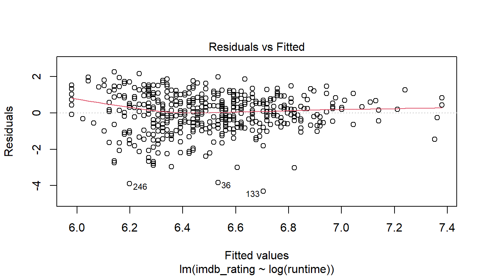
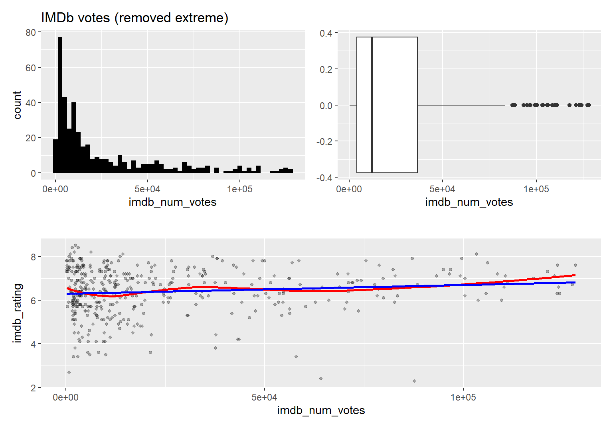
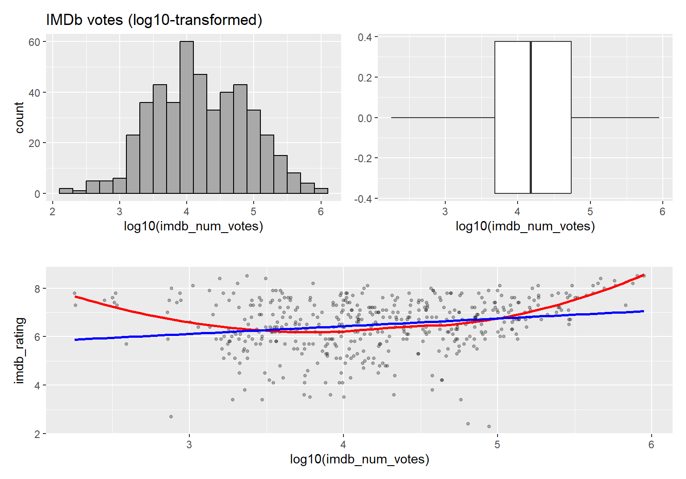
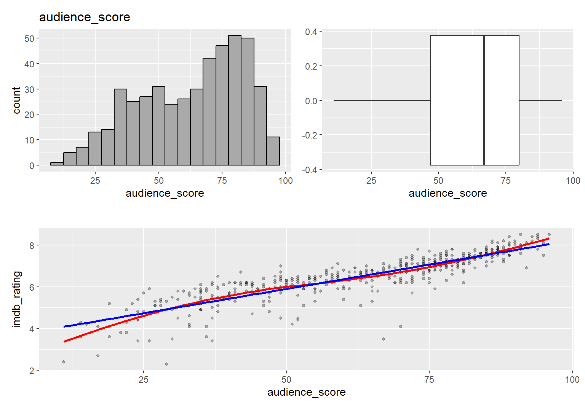
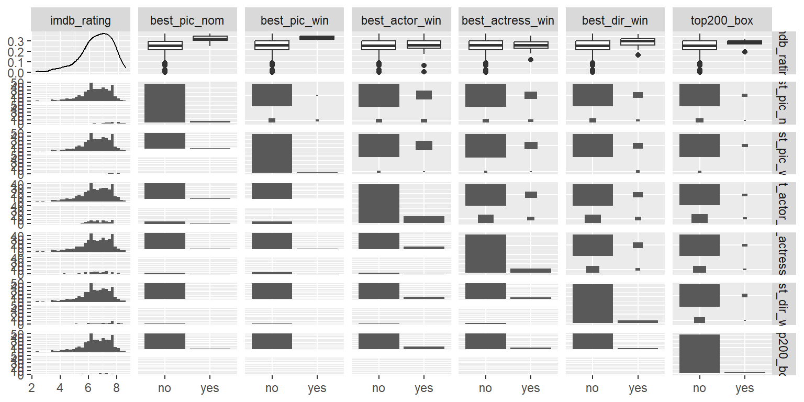
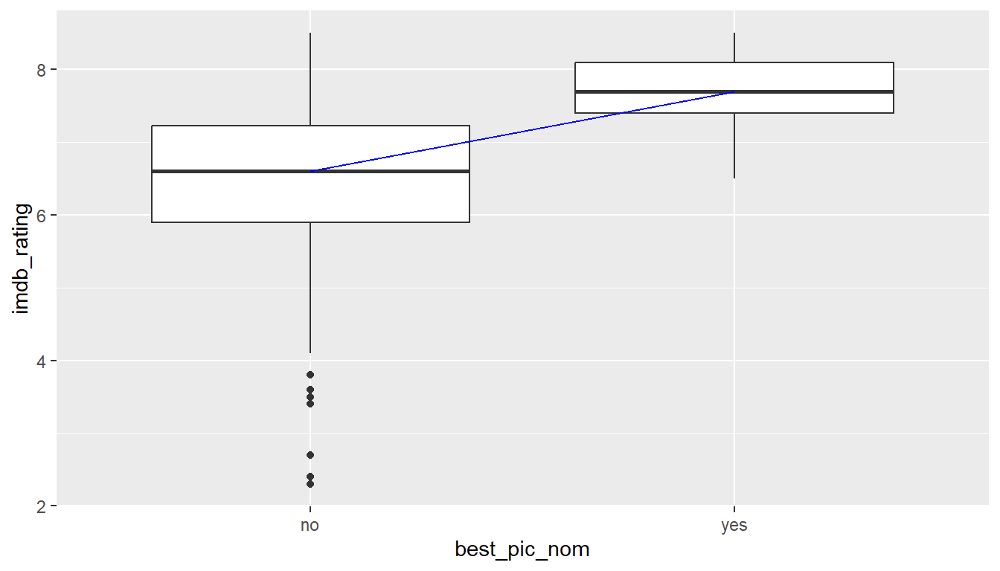
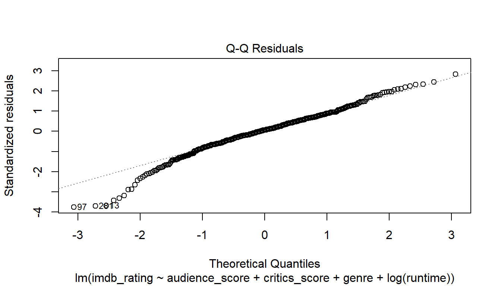

Load packages
library(tidyverse)
library(statsr)
library(GGally) # ------------------- extension of ggplot2
library(data.table) # ------------------- table calculation
library(patchwork) # ------------------- additional visualization tool
library(moments) # ------------------- package to calculate Skewness
library(broom) # ------------------- Convert stat obj. into tibbles
library(modeldata) # ------------------- Sampling data for modeling
library(knitr) # ------------------- support print of tablesLoad data
Your boss has just acquired data about how much audiences and critics like movies as well as many other variables about the movies. The dataset includes information from Rotten Tomatos and IMDB.
She is interested in learning what attributes make a movie popular. She is also interested in learning something new about movies. She wants your team to figure it all out.
As part of this project you will complete exploratory data analysis
(EDA), modeling, and prediction.
The dataset was provided by the course Data
Analysis with R, Duke University hosted on Coursera.
The dataset is a sample set of 651 observations with 33 variables. Below the list of all variables and their meanings. The column “important” indicates whether the variable is worthwhile to be considered in the model building or not.
| variable_name | meaning | data_type | important |
|---|---|---|---|
| title | Title of movie | chr | no |
| title_type | Type of movie (Documentary, Feature Film, TV Movie) | factor | yes |
| genre | Genre of movie (Action & Adventure, Comedy, Documentary, Drama, Horror, Mystery & Suspense, Other) | factor | yes |
| runtime | Runtime of movie (in minutes) | num | yes |
| mpaa_rating | MPAA rating of the movie (G, PG, PG-13, R, Unrated) | factor | yes |
| studio | Studio that produced the movie | factor | no |
| thtr_rel_year | Year the movie is released in theaters | num | yes |
| thtr_rel_month | Month the movie is released in theaters | num | yes |
| thtr_rel_day | Day of the month the movie is released in theaters | num | yes |
| dvd_rel_year | Year the movie is released on DVD | num | no |
| dvd_rel_month | Month the movie is released on DVD | num | no |
| dvd_rel_day | Day of the month the movie is released on DVD | num | no |
| imdb_rating | Rating on IMDB | num | yes |
| imdb_num_votes | Number of votes on IMDB | num | yes |
| critics_rating | Categorical variable for critics rating on Rotten Tomatoes (Certified Fresh, Fresh, Rotten) | factor | yes |
| critics_score | Critics score on Rotten Tomatoes | num | yes |
| audience_rating | Categorical variable for audience rating on Rotten Tomatoes (Spilled, Upright) | factor | yes |
| audience_score | Audience score on Rotten Tomatoes | num | yes |
| best_pic_nom | Whether or not the movie was nominated for a best picture Oscar (no, yes) | factor | yes |
| best_pic_win | Whether or not the movie won a best picture Oscar (no, yes) | factor | yes |
| best_actor_win | Whether or not one of the main actors in the movie ever won an Oscar (no, yes) | factor | yes |
| best_actress_win | Whether or not one of the main actresses in the movie ever won an Oscar (no, yes) | factor | yes |
| best_dir_win | Whether or not the director of the movie ever won an Oscar (no, yes) | factor | yes |
| top200_box | Whether or not the movie is in the Top 200 Box Office list on BoxOfficeMojo (no, yes) | factor | yes |
| director | Director of the movie | chr | no |
| actor1 | First main actor/actress in the abridged cast of the movie | chr | no |
| actor2 | Second main actor/actress in the abridged cast of the movie | chr | no |
| actor3 | Third main actor/actress in the abridged cast of the movie | chr | no |
| actor4 | Fourth main actor/actress in the abridged cast of the movie | chr | no |
| actor5 | Fifth main actor/actress in the abridged cast of the movie | chr | no |
IMBd rating
## Min. 1st Qu. Median Mean 3rd Qu. Max.
## 1.900 5.900 6.600 6.493 7.300 9.000The Internet Movie Database (IMDb) ratings are based on the
votes of registered users. Each user can vote only once, and the votes
are then aggregated and summarized into a single rating. Link
| IMDb Rating | Meaning |
|---|---|
1/10 |
god-awful |
2/10 |
awful |
3/10 |
bad |
4/10 |
nice try, but no cigar |
5/10 |
meh |
6/10 |
not bad |
7/10 |
good |
8/10 |
very good |
9/10 |
excellent |
10/10 |
masterpiece |
IMDb number of votes
## Min. 1st Qu. Median Mean 3rd Qu. Max.
## 180 4546 15116 57533 58301 893008The IMDb number of votes tells us about the movie’s popularity,
audience interest, quality of perception, and longevity. A high rating
with a significant number of votes is more credible than a high rating
with only a few votes. Link
MS Bing Copilot
title_type
## # A tibble: 3 × 2
## title_type n
## <fct> <int>
## 1 Documentary 55
## 2 Feature Film 591
## 3 TV Movie 5
genre
## # A tibble: 11 × 2
## genre n
## <fct> <int>
## 1 Action & Adventure 65
## 2 Animation 9
## 3 Art House & International 14
## 4 Comedy 87
## 5 Documentary 52
## 6 Drama 305
## 7 Horror 23
## 8 Musical & Performing Arts 12
## 9 Mystery & Suspense 59
## 10 Other 16
## 11 Science Fiction & Fantasy 9
mpaa_rating
## # A tibble: 6 × 2
## mpaa_rating n
## <fct> <int>
## 1 G 19
## 2 NC-17 2
## 3 PG 118
## 4 PG-13 133
## 5 R 329
## 6 Unrated 50Motion Picture Association (MPA) rating and meaning: Link
| Rating | Meaning |
|---|---|
G |
general audience |
NC-17 |
adults only |
PG |
parental guidance suggested |
PG-13 |
parents strongly cautioned |
R |
restricted |
Unrated |
not rated |
studio
fct_studio <- movies %>%
group_by(studio) %>%
summarise(n = n()) %>%
arrange(desc(n))
head(fct_studio)## # A tibble: 6 × 2
## studio n
## <fct> <int>
## 1 Paramount Pictures 37
## 2 Warner Bros. Pictures 30
## 3 Sony Pictures Home Entertainment 27
## 4 Universal Pictures 23
## 5 Warner Home Video 19
## 6 20th Century Fox 18212 distinct entries. Requires a lot of data cleaning, since several
of the same studio corporations are listed under different names. We
believe that the studio corporation will not influence the movie
popularity much and, therefore, drop this class.
critics rating
## # A tibble: 3 × 2
## critics_rating n
## <fct> <int>
## 1 Certified Fresh 135
## 2 Fresh 209
## 3 Rotten 307Tomatometer rating by critics and meaning: Link
| Rating | Meaning |
|---|---|
Certified Fresh |
Tomatometer score > 75% and > 5 reviews from top critics, >40 reviews from critics |
Fresh |
Tomatometer score > 75% (not perfect but majority gave a thumb up) |
Rotten |
Tomatometer score < 60% (movie failed) |
critics score
## Min. 1st Qu. Median Mean 3rd Qu. Max.
## 1.00 33.00 61.00 57.69 83.00 100.00
Score range: [0 - 100]
audience_rating
## # A tibble: 2 × 2
## audience_rating n
## <fct> <int>
## 1 Spilled 275
## 2 Upright 376Rotten Tomatoes rating by audience and meaning: Link
| Rating | Meaning |
|---|---|
Spilled |
< 60% of audience gave the movie a star rating of 3.5 or higher |
Upright |
> 60% of audience gave the movie a star rating of 3.5 or higher |
audience_score
## Min. 1st Qu. Median Mean 3rd Qu. Max.
## 11.00 46.00 65.00 62.36 80.00 97.00
Score range: [0 - 100]
The data were collected from 1970 to 2014. The ratings are a sample
from the audience on voluntary basis or from selected groups of movie
critics. So we can’t claim that they were collected by random sampling.
Usually, audience rating is biased towards the extremes. We therefore
cannot infer the statistics to the general population, i.e. movie
popularity for all people in the US. We can only infer the statistic on
new data collected under the same method as our sample dataset.
Research question
Can the Internet Movie Database (IMDb) rating be explained by factors such as:
Task:
Create a multiple linear model of best fit using only significant strong predictors to answer the questions, of type:
\[ \begin{aligned} \widehat{imdb\_rating} &= \hat{\beta}_0 + \hat{\beta}_1 \times {x_1} + \hat{\beta}_2 \times {x_2} + . . .\end{aligned} \]
imdb_ratingall othersFor the model building and testing split the movie dataset by random
sampling into training and test datasets.
Steps:
Prepare the dataset
Remove variables that carry no information about the IMDb rating.
movies_select <- movies %>%
select(-studio,
-director,
-actor1,
-actor2,
-actor3,
-actor4,
-actor5,
-imdb_url,
-rt_url)
Check for NAs and replace
## title title_type genre runtime
## 0 0 0 1
## mpaa_rating thtr_rel_year thtr_rel_month thtr_rel_day
## 0 0 0 0
## dvd_rel_year dvd_rel_month dvd_rel_day imdb_rating
## 8 8 8 0
## imdb_num_votes critics_rating critics_score audience_rating
## 0 0 0 0
## audience_score best_pic_nom best_pic_win best_actor_win
## 0 0 0 0
## best_actress_win best_dir_win top200_box
## 0 0 0NAs in “dvd_rel_dates” are not relevant for the model as we will see
later. There is one NA in runtime of the movie, listed below.
# Substitue NA in variable runtime
movies_select %>%
filter(is.na(runtime)) %>%
select(title, genre, runtime)## # A tibble: 1 × 3
## title genre runtime
## <chr> <fct> <dbl>
## 1 The End of America Documentary NAAccording to Wikipedia the movie’s runtime is 73 min. We will replace NA with 73 min.
row_id <- which(movies_select$title == "The End of America")
col_id <- which(colnames(movies_select) == "runtime")
movies_select[row_id, col_id] <- 73
movies_select %>%
filter(title == "The End of America") %>%
select(title, genre, runtime)## # A tibble: 1 × 3
## title genre runtime
## <chr> <fct> <dbl>
## 1 The End of America Documentary 73
Add computed new variables
For time series dependency analysis, we will create a date vector for theater release:
# Make date : theater and dvd release date
movies_select <- movies_select %>%
mutate(thtr_rel_date = make_date(thtr_rel_year, thtr_rel_month, thtr_rel_day))
Re-arrange the column sequence and summarize the variables.
movies_select <- movies_select %>%
select(imdb_rating,
title_type,
genre,
runtime,
mpaa_rating,
imdb_num_votes,
critics_rating,
critics_score,
audience_rating,
audience_score,
best_pic_nom,
best_pic_win,
best_actor_win,
best_actress_win,
best_dir_win,
top200_box,
thtr_rel_year,
thtr_rel_month,
dvd_rel_year,
dvd_rel_month,
thtr_rel_date)
Split data into training and test data
To test our model(s) we will split the dataset into three portions. One for training (70%), one for verification (20%) used during model building and one for final testing (10%).
set.seed(9876)
index <- sample(3, nrow(movies_select), replace = TRUE, prob = c(0.7, 0.2, 0.1))
train <- movies_select[index == 1,]
verify <- movies_select[index == 2,]
test <- movies_select[index == 3,]
Add row-id to the train dataset, required for outlier identification and removal.
First, let’s explore how much each independent variable contributes
to the outcome of the response variable by single linear regression. We
also want to check for linearity, distributions and outliers.
Below an overview of all numerical variables showing their relationships and correlation values.
We can see from the table that the correlation between the response
variable imdb_rating and the variables
runtime, imdb_num_votes is weak, but strong
for variables critics_score and
audience_score. We also see, that there is a strong
correlation (colinearity) between critics_score and
audience_score.
0. imdb_rating (response variable)
p1 <- train %>%
ggplot(aes(x = imdb_rating)) +
geom_histogram(binwidth = 0.2, fill = "darkgrey", col = "black")+
xlim(0,10)+
labs(title = "IMDb_rating - distribution")
p2 <- train %>%
ggplot(aes(y = imdb_rating)) +
geom_boxplot()+
labs(title = "")+
coord_flip()
p1 / p2## Min. 1st Qu. Median Mean 3rd Qu. Max.
## 2.300 5.900 6.700 6.503 7.300 8.500
The distribution is slightly left-skewed. The overall shape is close to a bell curve. We have three extreme data points smaller than 3.0.
Extreme data points in imdb_rating;
# Extreme data points: < 3
train %>%
filter(imdb_rating < 3) %>%
select(ID, imdb_rating, title_type, genre, runtime)## # A tibble: 3 × 5
## ID imdb_rating title_type genre runtime
## <int> <dbl> <fct> <fct> <dbl>
## 1 36 2.7 Feature Film Drama 106
## 2 133 2.4 Feature Film Action & Adventure 118
## 3 246 2.3 Feature Film Action & Adventure 86These data points have the ID 36, 133 and 246. We will follow up on
them later in the analysis.
Next, we will check each single relationship between response and
predictor variable for linearity and distribution. We will then identify
and remove extreme or potential influential points and decide whether to
include the variable as potential predictor in the model.
1. imdb_rating ~ runtime
# ---------------------------------------------------- check runtime (raw data)
p1 <- train %>%
ggplot(aes(x = (runtime))) +
geom_histogram(binwidth = 10, fill = "darkgray", col = "black")+
labs(title = "Runtime (raw data)")
p2 <- train %>%
ggplot(aes(x = (runtime), y = imdb_rating))+
geom_point(size = 1, alpha = 0.3 )+
geom_smooth(method = "loess", se = F, col = "red")+
geom_smooth(method = "lm", se = F, col = "blue")
# ---------------------------------------------- check runtime (log-transform)
p3 <- train %>%
ggplot(aes(x = log(runtime))) +
geom_histogram(binwidth = 0.1, fill = "darkgray", col = "black")+
labs(title = "Runtime (log(raw data))")
p4 <- train %>%
ggplot(aes(x = log(runtime), y = imdb_rating))+
geom_point(size = 1, alpha = 0.3 )+
geom_smooth(method = "loess", se = F, col = "red")+
geom_smooth(method = "lm", se = F, col = "blue")
(p1 + p2) / (p3 + p4)
The raw data show extremes on the left and right side and strong
deviation from linearity. The raw data are not suitable to be used
directly in the linear model. We, therefore, will modify the predictor
variable by applying different transformations.
Log transform of raw data normalizes the distribution, but we still
see non-linearity issues on the extreme ends on left and right. We will
therefore truncated the most extreme data points. The thresholds were
selected by trail and error to maximize the effect while keeping the
number of truncated data points to a minimum.
# truncate runtime
train %>%
filter(runtime < 75 | runtime > 180) %>%
select(ID, imdb_rating, title_type, genre, runtime)## # A tibble: 6 × 5
## ID imdb_rating title_type genre runtime
## <int> <dbl> <fct> <fct> <dbl>
## 1 38 7.3 Documentary Documentary 65
## 2 166 7.8 Documentary Documentary 267
## 3 204 6.7 Feature Film Animation 74
## 4 238 7.5 Documentary Documentary 73
## 5 334 6.4 Feature Film Animation 68
## 6 415 7 Documentary Documentary 40Only six data points are outside of range 75-180 min runtime. We will
truncate runtime accordingly.
# Truncate runtime (<75 -> 75, >180 -> 180)
train$runtime <- ifelse(train$runtime < 75, 75, train$runtime)
train$runtime <- ifelse(train$runtime > 180, 180, train$runtime)# ---------------------------------------------- check runtime (cutoff extremes)
p5 <- train %>%
ggplot(aes(x = (runtime))) +
geom_histogram(binwidth = 10, fill = "darkgray", col = "black")+
labs(title = "Runtime (removed extremes)",
subtitle = "runtime between 75 to 180 min")
p6 <- train %>%
ggplot(aes(x = (runtime), y = imdb_rating))+
geom_point(size = 1, alpha = 0.3 )+
geom_smooth(method = "loess", se = F, col = "red")+
geom_smooth(method = "lm", se = F, col = "blue")
# ------------------------------ check runtime (cutoff extremes + log-transform)
p7 <- train %>%
ggplot(aes(x = log(runtime))) +
geom_histogram(binwidth = 0.1, fill = "darkgray", col = "black")+
labs(title = "Runtime (removed extremes + log)",
subtitle = "runtime between 75 to 180 min")
p8 <- train %>%
ggplot(aes(x = log(runtime), y = imdb_rating))+
geom_point(size = 1, alpha = 0.3 )+
geom_smooth(method = "loess", se = F, col = "red")+
geom_smooth(method = "lm", se = F, col = "blue")
(p5 + p6) / (p7 + p8)
The regression line is now linear, with some small deviation on both
ends. The distribution is still right-skewed and the data points are
concentrated on the left side. Applying a log-transform on top of the
removed extreme version improves the data point distribution. The
linearity of the regression line is acceptable.
Simple model evaluation:
##
## Call:
## lm(formula = imdb_rating ~ log(runtime), data = train)
##
## Residuals:
## Min 1Q Median 3Q Max
## -4.3043 -0.6065 0.0927 0.7792 2.2584
##
## Coefficients:
## Estimate Std. Error t value Pr(>|t|)
## (Intercept) -0.9252 1.4467 -0.640 0.523
## log(runtime) 1.5992 0.3113 5.138 4.1e-07 ***
## ---
## Signif. codes: 0 '***' 0.001 '**' 0.01 '*' 0.05 '.' 0.1 ' ' 1
##
## Residual standard error: 1.063 on 463 degrees of freedom
## Multiple R-squared: 0.05394, Adjusted R-squared: 0.0519
## F-statistic: 26.4 on 1 and 463 DF, p-value: 4.103e-07
Residuals are distributed evenly over the range. Variable explains
5.39 % of response. It is a weak estimator but it will be used in the
model. There are about 3 outliers and 1 influential point that may have
to be removed.
2. imdb_rating ~ imdb_num_votes
# -------------------------------------------------- check imdb_num_votes (raw)
p1 <- train %>%
ggplot(aes(x = imdb_num_votes)) +
geom_histogram(binwidth = 2500, fill = "black")+
labs(title = "IMDb votes (raw data)")
p2 <- train %>%
ggplot(aes(y = imdb_num_votes)) +
geom_boxplot()+
labs(title = "")+
coord_flip()
p3 <- train %>%
ggplot(aes(x = (imdb_num_votes), y = imdb_rating))+
geom_point(size = 1, alpha = 0.3 )+
geom_smooth(method = "loess", se = F, col = "red")+
geom_smooth(method = "lm", se = F, col = "blue")+
labs(title = "")
(p1 + p2) / p3
The distribution is extremely right skewed. The regression line is
dominated by several extreme points (right) with large leverage and high
influence. We cannot use this data in its raw form for linear
regression. We will try to remove to mitigate the influence of the
extreme data points points by truncation, cut-off and
log-transformation.
Calculate threshold for cut_off: threshold = 3rd quartile + 1.5 * IQR
# Calculate cut_off margin for extreme values (1.5 * IQR)
imdb_extreme <- train %>%
summarise(iqr = IQR(imdb_num_votes),
q3 = quantile(imdb_num_votes, 0.75),
cut_off = q3 + 1.5 * iqr
)
cut_off <- as.numeric(imdb_extreme$cut_off)
cut_off## [1] 129892The cutoff value for extreme values is at about 130,000.
# Number of values to be affected by cut_off
train %>%
filter(imdb_num_votes >= cut_off) %>%
summarise(n = n())## # A tibble: 1 × 1
## n
## <int>
## 1 50
Using the upper cut-off threshold would remove 50 data points. We
would only do this if the variable shows a high correlation to the
response variable.
Transformation 1: Truncation`
# truncating
train_trun <- train %>%
mutate(
imdb_num_votes_trun = case_when(
imdb_num_votes < cut_off ~ imdb_num_votes,
imdb_num_votes >= cut_off ~ cut_off)
)# ----------------------------------------- check imdb_num_votes (truncated)
p1 <- train_trun %>%
ggplot(aes(x = imdb_num_votes_trun)) +
geom_histogram(binwidth = 2500, fill = "black")+
labs(title = "IMDb votes (truncated at 130K)")
p2 <- train_trun %>%
ggplot(aes(y = imdb_num_votes_trun)) +
geom_boxplot()+
labs(title = "")+
coord_flip()
p3 <- train_trun %>%
ggplot(aes(x = (imdb_num_votes_trun), y = imdb_rating))+
geom_point(size = 1, alpha = 0.3 )+
geom_smooth(method = "loess", se = F, col = "red")+
geom_smooth(method = "lm", se = F, col = "blue")+
labs(title = "")
(p1 + p2) / p3
Model with truncated data
##
## Call:
## lm(formula = imdb_rating ~ (imdb_num_votes_trun), data = train_trun)
##
## Residuals:
## Min 1Q Median 3Q Max
## -4.5653 -0.5584 0.0885 0.7327 2.2440
##
## Coefficients:
## Estimate Std. Error t value Pr(>|t|)
## (Intercept) 6.239e+00 6.388e-02 97.673 < 2e-16 ***
## imdb_num_votes_trun 7.144e-06 1.121e-06 6.372 4.51e-10 ***
## ---
## Signif. codes: 0 '***' 0.001 '**' 0.01 '*' 0.05 '.' 0.1 ' ' 1
##
## Residual standard error: 1.048 on 463 degrees of freedom
## Multiple R-squared: 0.08062, Adjusted R-squared: 0.07864
## F-statistic: 40.6 on 1 and 463 DF, p-value: 4.51e-10
imdb_num_votes_trun slope coefficient is almost “zero”. R2
= 8.06. The variable has not much information about the response
variable.
Transformation 2: Cut-off extreme data from
imdb_num_votes
# ----------------------------------------- check imdb_num_votes (remove extreme)
p1 <- train %>%
filter(imdb_num_votes <= cut_off) %>%
ggplot(aes(x = imdb_num_votes)) +
geom_histogram(binwidth = 2500, fill = "black")+
labs(title = "IMDb votes (removed extreme)")
p2 <- train %>%
filter(imdb_num_votes <= cut_off) %>%
ggplot(aes(y = imdb_num_votes)) +
geom_boxplot()+
labs(title = "")+
coord_flip()
p3 <- train %>%
filter(imdb_num_votes <= cut_off) %>%
ggplot(aes(x = imdb_num_votes, y = imdb_rating))+
geom_point(size = 1, alpha = 0.3 )+
geom_smooth(method = "loess", se = F, col = "red")+
geom_smooth(method = "lm", se = F, col = "blue")+
labs(title = "")
(p1 + p2) / p3
Model with filtered data
# simple model
model <- lm(imdb_rating ~ (imdb_num_votes),
data = filter(train, imdb_num_votes <= cut_off))
summary(model)##
## Call:
## lm(formula = imdb_rating ~ (imdb_num_votes), data = filter(train,
## imdb_num_votes <= cut_off))
##
## Residuals:
## Min 1Q Median 3Q Max
## -4.3450 -0.5955 0.0949 0.7707 2.1993
##
## Coefficients:
## Estimate Std. Error t value Pr(>|t|)
## (Intercept) 6.291e+00 6.928e-02 90.814 <2e-16 ***
## imdb_num_votes 4.037e-06 1.729e-06 2.335 0.02 *
## ---
## Signif. codes: 0 '***' 0.001 '**' 0.01 '*' 0.05 '.' 0.1 ' ' 1
##
## Residual standard error: 1.08 on 413 degrees of freedom
## Multiple R-squared: 0.01303, Adjusted R-squared: 0.01064
## F-statistic: 5.45 on 1 and 413 DF, p-value: 0.02004
imdb_num_votes_trun slope coefficient is almost “zero”. R2
= 1.3. F-statistic = 5.5. The variable has almost no information about
the response variable.
Transformation 3: Log10 of
imdb_num_votes
# ----------------------------------------- check imdb_num_votes (log-trans)
p1 <- train %>%
ggplot(aes(x = log10(imdb_num_votes))) +
geom_histogram(binwidth = 0.2, fill = "darkgrey", col="black")+
labs(title = "IMDb votes (log10-transformed)")
p2 <- train %>%
ggplot(aes(y = log10(imdb_num_votes))) +
geom_boxplot()+
labs(title = "")+
coord_flip()
p3 <- train %>%
ggplot(aes(x = log10(imdb_num_votes), y = imdb_rating))+
geom_point(size = 1, alpha = 0.3 )+
geom_smooth(method = "loess", se = F,col = "red")+
geom_smooth(method = "lm", se = F, col = "blue")+
labs(title = "")
(p1 + p2) / p3
##
## Call:
## lm(formula = imdb_rating ~ log10(imdb_num_votes), data = train)
##
## Residuals:
## Min 1Q Median 3Q Max
## -4.4344 -0.5373 0.1093 0.7626 2.2633
##
## Coefficients:
## Estimate Std. Error t value Pr(>|t|)
## (Intercept) 5.1670 0.2995 17.250 < 2e-16 ***
## log10(imdb_num_votes) 0.3171 0.0701 4.523 7.75e-06 ***
## ---
## Signif. codes: 0 '***' 0.001 '**' 0.01 '*' 0.05 '.' 0.1 ' ' 1
##
## Residual standard error: 1.07 on 463 degrees of freedom
## Multiple R-squared: 0.04232, Adjusted R-squared: 0.04025
## F-statistic: 20.46 on 1 and 463 DF, p-value: 7.745e-06For log10 transform residuals show a remaining parabolic pattern.
Truncated, cut-off and log10-transform don’t show any convincing linear
relationship. We will, therefore, drop this variable from the
model.
3. imdb_rating ~ critics_score
# check critics_score
p1 <- train %>%
ggplot(aes(x = critics_score)) +
geom_histogram(binwidth = 5, fill = "darkgrey", col="black")+
labs(title = "Critics_score")
p2 <- train %>%
ggplot(aes(y = critics_score))+
geom_boxplot()+
labs(title = "")+
coord_flip()
p3 <- train %>%
ggplot(aes(x = critics_score, y = imdb_rating))+
geom_point(size = 1, alpha = 0.3 )+
geom_smooth(method = "loess", se = F, col = "red")+
geom_smooth(method = "lm", se = F, col = "blue")+
labs(title = "")
(p1 + p2) / (p3)
Approximately good linear relationship with response variable/
##
## Call:
## lm(formula = imdb_rating ~ (critics_score), data = train)
##
## Residuals:
## Min 1Q Median 3Q Max
## -2.57874 -0.39075 0.04064 0.42164 2.12281
##
## Coefficients:
## Estimate Std. Error t value Pr(>|t|)
## (Intercept) 4.771374 0.070259 67.91 <2e-16 ***
## critics_score 0.029845 0.001085 27.52 <2e-16 ***
## ---
## Signif. codes: 0 '***' 0.001 '**' 0.01 '*' 0.05 '.' 0.1 ' ' 1
##
## Residual standard error: 0.6734 on 463 degrees of freedom
## Multiple R-squared: 0.6206, Adjusted R-squared: 0.6197
## F-statistic: 757.2 on 1 and 463 DF, p-value: < 2.2e-16
Good linear approximation, random residuals, nearly normal. Variable
explains 62.06 % of response. Good candidate for the model. There are 2
influential points and 1 outlier that may have to be removed.
4. imdb_rating ~ audience_score
# check audience_score
p1 <- train %>%
ggplot(aes(x = audience_score)) +
geom_histogram(binwidth = 5, fill = "darkgrey", col="black")+
labs(title = "audience_score")
p2 <- train %>%
ggplot(aes(y = audience_score))+
geom_boxplot()+
labs(title = "")+
coord_flip()
p3 <- train %>%
ggplot(aes(x = audience_score, y = imdb_rating))+
geom_point(size = 1, alpha = 0.3 )+
geom_smooth(method = "loess", se = F, col = "red")+
geom_smooth(method = "lm", se = F, col = "blue")+
labs(title = "")
(p1 + p2) / (p3)
Good linear approximation.
##
## Call:
## lm(formula = imdb_rating ~ (audience_score), data = train)
##
## Residuals:
## Min 1Q Median 3Q Max
## -3.1929 -0.2069 0.0844 0.2958 1.1693
##
## Coefficients:
## Estimate Std. Error t value Pr(>|t|)
## (Intercept) 3.578332 0.079735 44.88 <2e-16 ***
## audience_score 0.046486 0.001205 38.58 <2e-16 ***
## ---
## Signif. codes: 0 '***' 0.001 '**' 0.01 '*' 0.05 '.' 0.1 ' ' 1
##
## Residual standard error: 0.5325 on 463 degrees of freedom
## Multiple R-squared: 0.7627, Adjusted R-squared: 0.7622
## F-statistic: 1488 on 1 and 463 DF, p-value: < 2.2e-16
Random residual distribution but with small funnel effect, nearly
normal, no extreme values. Variable explains 76.27 % of response. Good
candidate for model. There are 3 outliers and 2 influential points that
may have to be removed.
Overview of relationships between response variable
imdb_rating and categorical variables.

5. imdb_rating ~ title_type
# check title_type
train %>%
ggplot(aes(y = imdb_rating, x = title_type, group = title_type))+
geom_boxplot()+
stat_summary(fun.y = median,
geom = "line",
aes(group = 1),
col = "blue",
size = 0.5
)
There is a linear relationship between IMDb rating and title type (blue
line).
##
## Call:
## lm(formula = imdb_rating ~ title_type, data = train)
##
## Residuals:
## Min 1Q Median 3Q Max
## -4.0991 -0.4991 0.1009 0.7009 2.1009
##
## Coefficients:
## Estimate Std. Error t value Pr(>|t|)
## (Intercept) 7.7103 0.1648 46.778 < 2e-16 ***
## title_typeFeature Film -1.3112 0.1723 -7.611 1.54e-13 ***
## title_typeTV Movie -1.9853 0.5404 -3.674 0.000267 ***
## ---
## Signif. codes: 0 '***' 0.001 '**' 0.01 '*' 0.05 '.' 0.1 ' ' 1
##
## Residual standard error: 1.029 on 462 degrees of freedom
## Multiple R-squared: 0.1153, Adjusted R-squared: 0.1115
## F-statistic: 30.12 on 2 and 462 DF, p-value: 5.07e-13
Interpretation: Residuals do not show constant variability. Variable
explains 11.53 % of response.
6. imdb_rating ~ genre
# check title_type
train %>%
ggplot(aes(y = imdb_rating, x = fct_reorder(genre, imdb_rating)))+
geom_boxplot()+
xlab("genre")+
stat_summary(fun.y = median,
geom = "line",
aes(group = 1),
col = "blue",
size = 0.5)+
coord_flip()
Each genre has distinctive different median in IMDb rating. There is a
nearly linear relationship.
##
## Call:
## lm(formula = imdb_rating ~ genre, data = train)
##
## Residuals:
## Min 1Q Median 3Q Max
## -4.0051 -0.5051 0.0949 0.5949 2.4786
##
## Coefficients:
## Estimate Std. Error t value Pr(>|t|)
## (Intercept) 5.9214 0.1482 39.965 < 2e-16 ***
## genreAnimation 0.3357 0.3920 0.856 0.392233
## genreArt House & International 0.7513 0.3252 2.310 0.021333 *
## genreComedy -0.1754 0.1913 -0.917 0.359652
## genreDocumentary 1.7841 0.2181 8.181 2.86e-15 ***
## genreDrama 0.7836 0.1619 4.841 1.77e-06 ***
## genreHorror -0.2714 0.2821 -0.962 0.336475
## genreMusical & Performing Arts 1.4411 0.3704 3.890 0.000115 ***
## genreMystery & Suspense 0.5013 0.2071 2.420 0.015910 *
## genreOther 0.6252 0.2888 2.165 0.030928 *
## genreScience Fiction & Fantasy -0.3214 0.4191 -0.767 0.443485
## ---
## Signif. codes: 0 '***' 0.001 '**' 0.01 '*' 0.05 '.' 0.1 ' ' 1
##
## Residual standard error: 0.9602 on 454 degrees of freedom
## Multiple R-squared: 0.2435, Adjusted R-squared: 0.2268
## F-statistic: 14.61 on 10 and 454 DF, p-value: < 2.2e-16
Interpretation: Residuals show some constant variability. The
relationship is linear. Variable explains 24.35 % of response.
7. imdb_rating ~ mpaa_rating
# check title_type
train %>%
ggplot(aes(y = imdb_rating, x = fct_reorder(mpaa_rating, imdb_rating)))+
geom_boxplot()+
xlab("mpaa_rating")+
stat_summary(fun.y = median,
geom = "line",
aes(group = 1),
col = "blue",
size = 0.5)
IQR of MPAA ratings overlap in most cases. Medians show slightly linear
relationship to IMDb rating.
##
## Call:
## lm(formula = imdb_rating ~ mpaa_rating, data = train)
##
## Residuals:
## Min 1Q Median 3Q Max
## -4.2110 -0.6110 0.1297 0.7000 1.9890
##
## Coefficients:
## Estimate Std. Error t value Pr(>|t|)
## (Intercept) 6.7000 0.2933 22.844 <2e-16 ***
## mpaa_ratingNC-17 0.3000 1.0974 0.273 0.7847
## mpaa_ratingPG -0.2441 0.3131 -0.780 0.4361
## mpaa_ratingPG-13 -0.5426 0.3129 -1.734 0.0836 .
## mpaa_ratingR -0.1890 0.3016 -0.627 0.5312
## mpaa_ratingUnrated 0.6703 0.3410 1.966 0.0499 *
## ---
## Signif. codes: 0 '***' 0.001 '**' 0.01 '*' 0.05 '.' 0.1 ' ' 1
##
## Residual standard error: 1.057 on 459 degrees of freedom
## Multiple R-squared: 0.07234, Adjusted R-squared: 0.06223
## F-statistic: 7.158 on 5 and 459 DF, p-value: 1.827e-06
Interpretation: Variable explains 7.23 % of response. It is correlated
with the response variable. But we think that MPAA rating (age
appropriate) has nothing to do with movie rating. If we introduce this
variable we may mask effects from other variables, like
genre. Therefore, we will not include this MPAA rating into
the the model.
8. imdb_rating ~ critics_rating
# check title_type
train %>%
ggplot(aes(y = imdb_rating, x = fct_reorder(critics_rating, imdb_rating)))+
geom_boxplot()+
xlab("critics_rating")+
stat_summary(fun.y = median,
geom = "line",
aes(group = 1),
col = "blue",
size = 0.5)
Critics_rating medians are in a linear relationship with IMDB
rating.
##
## Call:
## lm(formula = imdb_rating ~ critics_rating, data = train)
##
## Residuals:
## Min 1Q Median 3Q Max
## -3.4628 -0.4628 0.0719 0.5159 2.0372
##
## Coefficients:
## Estimate Std. Error t value Pr(>|t|)
## (Intercept) 7.42812 0.08451 87.893 < 2e-16 ***
## critics_ratingFresh -0.44402 0.10809 -4.108 4.72e-05 ***
## critics_ratingRotten -1.66528 0.10143 -16.418 < 2e-16 ***
## ---
## Signif. codes: 0 '***' 0.001 '**' 0.01 '*' 0.05 '.' 0.1 ' ' 1
##
## Residual standard error: 0.8281 on 462 degrees of freedom
## Multiple R-squared: 0.4275, Adjusted R-squared: 0.425
## F-statistic: 172.5 on 2 and 462 DF, p-value: < 2.2e-16
Interpretation: Residuals show no constant variability. Variable
explains 42.75 % of response. We expect that critics_rating
is correlated with critics_score.
9. imdb_rating ~ audience_rating
# check title_type
train %>%
ggplot(aes(y = imdb_rating, x = fct_reorder(audience_rating, imdb_rating)))+
geom_boxplot()+
xlab("audience_rating")+
stat_summary(fun.y = median,
geom = "line",
aes(group = 1),
col = "blue",
size = 0.5)
Distinctive IQR for audience rating in relation to IMDB rating.
##
## Call:
## lm(formula = imdb_rating ~ audience_rating, data = train)
##
## Residuals:
## Min 1Q Median 3Q Max
## -3.6487 -0.3689 0.1311 0.5311 1.5311
##
## Coefficients:
## Estimate Std. Error t value Pr(>|t|)
## (Intercept) 5.56895 0.05570 99.99 <2e-16 ***
## audience_ratingUpright 1.57978 0.07243 21.81 <2e-16 ***
## ---
## Signif. codes: 0 '***' 0.001 '**' 0.01 '*' 0.05 '.' 0.1 ' ' 1
##
## Residual standard error: 0.7677 on 463 degrees of freedom
## Multiple R-squared: 0.5068, Adjusted R-squared: 0.5057
## F-statistic: 475.8 on 1 and 463 DF, p-value: < 2.2e-16
Interpretation: Residuals show constant variability. Variable explains
50.68 % of response. We expect that audience_rating is
correlated with audience_score.
10. imdb_rating ~ best_pic_nom
# check title_type
train %>%
ggplot(aes(y = imdb_rating, x = best_pic_nom))+
geom_boxplot()+
stat_summary(fun.y = median,
geom = "line",
aes(group = 1),
col = "blue",
size = 0.5)
Best_pic_nom shows distinct IMDB ratings.
##
## Call:
## lm(formula = imdb_rating ~ best_pic_nom, data = train)
##
## Residuals:
## Min 1Q Median 3Q Max
## -4.1585 -0.5585 0.1415 0.7415 2.0415
##
## Coefficients:
## Estimate Std. Error t value Pr(>|t|)
## (Intercept) 6.45848 0.05049 127.914 < 2e-16 ***
## best_pic_nomyes 1.22387 0.26407 4.635 4.65e-06 ***
## ---
## Signif. codes: 0 '***' 0.001 '**' 0.01 '*' 0.05 '.' 0.1 ' ' 1
##
## Residual standard error: 1.069 on 463 degrees of freedom
## Multiple R-squared: 0.04434, Adjusted R-squared: 0.04227
## F-statistic: 21.48 on 1 and 463 DF, p-value: 4.655e-06
Interpretation: Residuals show no constant variability. Variable
explains 4.43 % of response.
12. imdb_rating ~ best_pic_win
# check title_type
train %>%
ggplot(aes(y = imdb_rating, x = best_pic_win))+
geom_boxplot()+
stat_summary(fun.y = median,
geom = "line",
aes(group = 1),
col = "blue",
size = 0.5)
Best_pic_win shows distinct IMDB ratings.
##
## Call:
## lm(formula = imdb_rating ~ best_pic_win, data = train)
##
## Residuals:
## Min 1Q Median 3Q Max
## -4.192 -0.592 0.208 0.808 2.008
##
## Coefficients:
## Estimate Std. Error t value Pr(>|t|)
## (Intercept) 6.4920 0.0506 128.294 <2e-16 ***
## best_pic_winyes 1.3080 0.5456 2.397 0.0169 *
## ---
## Signif. codes: 0 '***' 0.001 '**' 0.01 '*' 0.05 '.' 0.1 ' ' 1
##
## Residual standard error: 1.086 on 463 degrees of freedom
## Multiple R-squared: 0.01226, Adjusted R-squared: 0.01013
## F-statistic: 5.748 on 1 and 463 DF, p-value: 0.0169
Interpretation: Residuals show no constant variability. Variable
explains 1.23 % of response.
13. imdb_rating ~ best_actor_win
# check title_type
train %>%
ggplot(aes(y = imdb_rating, x = best_actor_win))+
geom_boxplot()+
stat_summary(fun.y = median,
geom = "line",
aes(group = 1),
col = "blue",
size = 0.5)
Best_actor_win shows no distinct IMDB rating. Slope of line between
medians is almost zero.
##
## Call:
## lm(formula = imdb_rating ~ best_actor_win, data = train)
##
## Residuals:
## Min 1Q Median 3Q Max
## -4.2910 -0.5716 0.1284 0.8284 2.0284
##
## Coefficients:
## Estimate Std. Error t value Pr(>|t|)
## (Intercept) 6.47161 0.05466 118.397 <2e-16 ***
## best_actor_winyes 0.21944 0.14400 1.524 0.128
## ---
## Signif. codes: 0 '***' 0.001 '**' 0.01 '*' 0.05 '.' 0.1 ' ' 1
##
## Residual standard error: 1.09 on 463 degrees of freedom
## Multiple R-squared: 0.00499, Adjusted R-squared: 0.002841
## F-statistic: 2.322 on 1 and 463 DF, p-value: 0.1282
Interpretation: Model is not significant (F-test: p-value = 0.128),
i.e. fail to reject H0 (beta1 = 0). Variable explains only 0.5 % of
response.
14. imdb_rating ~ best_actress_win
# check title_type
train %>%
ggplot(aes(y = imdb_rating, x = best_actress_win))+
geom_boxplot()+
stat_summary(fun.y = median,
geom = "line",
aes(group = 1),
col = "blue",
size = 0.5)
Best_actress_win shows no distinct IMDB rating. Slope of line between
medians is zero.
##
## Call:
## lm(formula = imdb_rating ~ best_actress_win, data = train)
##
## Residuals:
## Min 1Q Median 3Q Max
## -4.1848 -0.5848 0.1244 0.8152 2.0152
##
## Coefficients:
## Estimate Std. Error t value Pr(>|t|)
## (Intercept) 6.48476 0.05327 121.731 <2e-16 ***
## best_actress_winyes 0.19079 0.17124 1.114 0.266
## ---
## Signif. codes: 0 '***' 0.001 '**' 0.01 '*' 0.05 '.' 0.1 ' ' 1
##
## Residual standard error: 1.092 on 463 degrees of freedom
## Multiple R-squared: 0.002674, Adjusted R-squared: 0.0005199
## F-statistic: 1.241 on 1 and 463 DF, p-value: 0.2658
Interpretation: Model is not significant (F-test: p_value = 0.266),
i.e. fail to reject H0 (beta1 = 0). Variable explains 0.27 % of
response.
15. imdb_rating ~ best_dir_win
# check title_type
train %>%
ggplot(aes(y = imdb_rating, x = best_dir_win))+
geom_boxplot()+
stat_summary(fun.y = median,
geom = "line",
aes(group = 1),
col = "blue",
size = 0.5)
Best_dir_win shows a small difference in IMDB rating.
##
## Call:
## lm(formula = imdb_rating ~ best_dir_win, data = train)
##
## Residuals:
## Min 1Q Median 3Q Max
## -4.1589 -0.5589 0.1411 0.7411 2.0411
##
## Coefficients:
## Estimate Std. Error t value Pr(>|t|)
## (Intercept) 6.45885 0.05178 124.731 < 2e-16 ***
## best_dir_winyes 0.68782 0.20387 3.374 0.000804 ***
## ---
## Signif. codes: 0 '***' 0.001 '**' 0.01 '*' 0.05 '.' 0.1 ' ' 1
##
## Residual standard error: 1.08 on 463 degrees of freedom
## Multiple R-squared: 0.024, Adjusted R-squared: 0.02189
## F-statistic: 11.38 on 1 and 463 DF, p-value: 0.0008035
Interpretation: Residuals show no constant variability. Variable
explains 2.4 % of response.
16. imdb_rating ~ top200_box
# check title_type
train %>%
ggplot(aes(y = imdb_rating, x = top200_box))+
geom_boxplot()+
stat_summary(fun.y = median,
geom = "line",
aes(group = 1),
col = "blue",
size = 0.5)
IQR of Top200_box shows no difference in IMDB rating.
##
## Call:
## lm(formula = imdb_rating ~ top200_box, data = train)
##
## Residuals:
## Min 1Q Median 3Q Max
## -4.1914 -0.5914 0.1086 0.8086 2.0086
##
## Coefficients:
## Estimate Std. Error t value Pr(>|t|)
## (Intercept) 6.49143 0.05111 127.000 <2e-16 ***
## top200_boxyes 0.54857 0.34855 1.574 0.116
## ---
## Signif. codes: 0 '***' 0.001 '**' 0.01 '*' 0.05 '.' 0.1 ' ' 1
##
## Residual standard error: 1.09 on 463 degrees of freedom
## Multiple R-squared: 0.005322, Adjusted R-squared: 0.003173
## F-statistic: 2.477 on 1 and 463 DF, p-value: 0.1162
Interpretation: Model is not significant (F-test: p-value = 0.116),
i.e. fail to reject H0 (beta1 = 0). Variable explains 0.53 % of
response.
17. imdb_rating ~ thtr_rel_month
It may be possible that the movie rating is related to the month of theater release, due to seasonal tradition of the audience.
# check title_type
train %>%
# ggplot(aes(y = imdb_rating, x = as.factor(thtr_rel_month)))+
ggplot(aes(y = imdb_rating, x = fct_reorder(factor(thtr_rel_month), imdb_rating)))+
geom_boxplot()+
xlab("month of theater release - in order of imdb rating")+
stat_summary(fun.y = median,
geom = "line",
aes(group = 1),
col = "blue",
size = 0.5)
The meadians of thtr_rel_month show almost no differences
in IMDB rating.
##
## Call:
## lm(formula = imdb_rating ~ as.factor(thtr_rel_month), data = train)
##
## Residuals:
## Min 1Q Median 3Q Max
## -4.1308 -0.5917 0.1000 0.8083 2.1028
##
## Coefficients:
## Estimate Std. Error t value Pr(>|t|)
## (Intercept) 6.43077 0.15183 42.354 <2e-16 ***
## as.factor(thtr_rel_month)2 0.28077 0.26298 1.068 0.286
## as.factor(thtr_rel_month)3 0.12378 0.24368 0.508 0.612
## as.factor(thtr_rel_month)4 -0.13077 0.25102 -0.521 0.603
## as.factor(thtr_rel_month)5 -0.05264 0.24600 -0.214 0.831
## as.factor(thtr_rel_month)6 -0.04914 0.21799 -0.225 0.822
## as.factor(thtr_rel_month)7 -0.07401 0.23548 -0.314 0.753
## as.factor(thtr_rel_month)8 0.34256 0.25102 1.365 0.173
## as.factor(thtr_rel_month)9 -0.03355 0.23739 -0.141 0.888
## as.factor(thtr_rel_month)10 0.11041 0.21577 0.512 0.609
## as.factor(thtr_rel_month)11 0.06090 0.23739 0.257 0.798
## as.factor(thtr_rel_month)12 0.30508 0.21371 1.428 0.154
## ---
## Signif. codes: 0 '***' 0.001 '**' 0.01 '*' 0.05 '.' 0.1 ' ' 1
##
## Residual standard error: 1.095 on 453 degrees of freedom
## Multiple R-squared: 0.01859, Adjusted R-squared: -0.005242
## F-statistic: 0.78 on 11 and 453 DF, p-value: 0.6602
Interpretation: Model is not significant (F-test: p-value = 0.660),
i.e. fail to reject H0 (beta1 = 0). Variable explains 1.86 % of
response.
18. imdb_rating ~ dvd_rel_month
It may be possible that the movie rating is related to the month of DVD release, due to seasonal tradition of the audience.
# check title_type
train %>%
filter(!is.na(dvd_rel_month)) %>%
ggplot(aes(y = imdb_rating, x = fct_reorder(factor(dvd_rel_month), imdb_rating)))+
geom_boxplot()+
xlab("month of dvd release - in order of imdb rating")+
stat_summary(fun.y = median,
geom = "line",
aes(group = 1),
col = "blue",
size = 0.5)
The dvd_rel_month shows no differences in IMDB
rating.
# Simple model
model <- train %>%
filter(!is.na(dvd_rel_month)) %>%
lm(imdb_rating ~ as.factor(thtr_rel_month), data = .)
summary(model)##
## Call:
## lm(formula = imdb_rating ~ as.factor(thtr_rel_month), data = .)
##
## Residuals:
## Min 1Q Median 3Q Max
## -4.1308 -0.5917 0.0885 0.8083 2.1028
##
## Coefficients:
## Estimate Std. Error t value Pr(>|t|)
## (Intercept) 6.43077 0.15159 42.421 <2e-16 ***
## as.factor(thtr_rel_month)2 0.28077 0.26257 1.069 0.286
## as.factor(thtr_rel_month)3 0.18486 0.24561 0.753 0.452
## as.factor(thtr_rel_month)4 -0.13077 0.25063 -0.522 0.602
## as.factor(thtr_rel_month)5 -0.10174 0.24805 -0.410 0.682
## as.factor(thtr_rel_month)6 -0.04914 0.21764 -0.226 0.821
## as.factor(thtr_rel_month)7 -0.06791 0.23901 -0.284 0.776
## as.factor(thtr_rel_month)8 0.34256 0.25063 1.367 0.172
## as.factor(thtr_rel_month)9 -0.03355 0.23701 -0.142 0.888
## as.factor(thtr_rel_month)10 0.11041 0.21544 0.512 0.609
## as.factor(thtr_rel_month)11 0.06090 0.23701 0.257 0.797
## as.factor(thtr_rel_month)12 0.30508 0.21337 1.430 0.153
## ---
## Signif. codes: 0 '***' 0.001 '**' 0.01 '*' 0.05 '.' 0.1 ' ' 1
##
## Residual standard error: 1.093 on 449 degrees of freedom
## Multiple R-squared: 0.01998, Adjusted R-squared: -0.004034
## F-statistic: 0.832 on 11 and 449 DF, p-value: 0.608
Interpretation: Model is not significant (F-test: p-value = 0.608),
i.e. fail to reject H0 (beta1 = 0). Variable explains 2 % of
response.
1. Colinearity between critics_score and
audience_score
Variables critics_score and audience_score
expected to be highly correlated (R = 0.73).
Let’s plot the relationship.
# Correlation between critics_score and audience_score
r <- cor(train$audience_score, train$critics_score)
r2 <- r^2
train %>%
ggplot(aes(x = audience_score, y = critics_score))+
geom_point(size = 1, alpha = 0.3 )+
geom_smooth(method = "lm", col = "blue")+
labs(title = "Colinearity check: critics_score vs. audience_score")+
annotate("text", x=15, y=95, label=paste("R = ", round(r, 2)), size = 4)+
annotate("text", x=15, y=88, label=paste("R2 = ", round(r2, 2)), size = 4)The data scores from critics and audience were collected independently. Even though they are strongly correlated we think they should be both used in the model.
In addition, Colinearity between the two variables
can be tested with the Variance Inflation Factor
(VIF).
Where VIF = 1 / (1 - R-squared): VIF < 5 is acceptable.
# Model with "critics_score" and "audience_score"
model <- lm(imdb_rating ~ (critics_score) + (audience_score), data = train)
# summary(model)
vif_values <- car::vif(model)
print("VIF scores: ")## [1] "VIF scores: "## critics_score audience_score
## 2.126321 2.126321
VIF value is between 1 and 5 and indicates a moderate correlation. This
is not severe enough to remove one of these variable. link
2. Colinearity between critics_score and
critics_rating
# Collinearty check
p1 <- train %>%
ggplot(aes(x=critics_rating, y=critics_score))+
geom_boxplot() +
labs(title = "IMDb_Rating ~ critics_score by critics_rating")+
coord_flip()
p2 <- train %>%
ggplot(aes(y = imdb_rating, x = critics_score))+
geom_point(aes(col = critics_rating))+
geom_smooth(aes(col = critics_rating), method = "lm", se=F)
p1 / p2
Categorical variable critics_rating is directly derived
from critics_score. I.e. we can either use
critics_rating or critics_score.
critics_score is preferred because it contains more
information.
3. Colinearity between audience_score and
audience_rating
# Collinearty check
p1 <- train %>%
ggplot(aes(x=audience_rating, y=audience_score))+
geom_boxplot() +
labs(title = "IMDb_Rating ~ audience_score by audience_rating")+
coord_flip()
p2 <- train %>%
ggplot(aes(y = imdb_rating, x = audience_score))+
geom_point(aes(col = audience_rating))+
geom_smooth(aes(col = audience_rating), method = "lm", se=F)
p1 / p2
Categorical variable audience_rating is directly derived
from audience_score. I.e. we can either
useaudience_rating or audience_score.
audience_score is preferred because it contains more
information.
We will remove the identified outlier and influential points and
compare a model with and without removal.
Remove outliers and influential points
# Create a data frame for outliers and influential points
max_length <- max(length(v1_runtime),
length(v2_critics_score),
length(v3_audience_score))
length(v1_runtime) <- max_length
length(v2_critics_score) <- max_length
length(v3_audience_score) <- max_length
df_extreme <- data.frame(v1_runtime,
v2_critics_score,
v3_audience_score)
df_extreme <- df_extreme %>%
pivot_longer(cols = 1:3, names_to = "variable", values_to = "ID")
df_extreme <- df_extreme %>%
filter(!is.na(ID)) %>%
arrange(variable)
df_extreme <- distinct(df_extreme, ID, .keep_all = TRUE)We have identified 6 outliers or influential points for removal.
# List of outliers
train %>%
semi_join(df_extreme, by = "ID") %>%
select(ID, imdb_rating, audience_score, critics_score, runtime)## # A tibble: 6 × 5
## ID imdb_rating audience_score critics_score runtime
## <int> <dbl> <dbl> <dbl> <dbl>
## 1 36 2.7 17 17 106
## 2 94 3.5 67 4 91
## 3 133 2.4 11 3 118
## 4 155 4.1 70 29 103
## 5 246 2.3 29 2 86
## 6 249 6.3 61 67 84# Remove outliers from training dataset using the anti_join function,
# drops all obs in one df1 that have a match in df2
train_clean <- train %>%
anti_join(df_extreme, by = "ID")
Model without removal:
m_full_raw <- lm(imdb_rating ~ log(runtime) + critics_score + audience_score, data = train)
summary(m_full_raw)##
## Call:
## lm(formula = imdb_rating ~ log(runtime) + critics_score + audience_score,
## data = train)
##
## Residuals:
## Min 1Q Median 3Q Max
## -2.42345 -0.20648 0.01988 0.25511 1.21426
##
## Coefficients:
## Estimate Std. Error t value Pr(>|t|)
## (Intercept) 1.354933 0.640425 2.116 0.034908 *
## log(runtime) 0.503936 0.139423 3.614 0.000334 ***
## critics_score 0.012013 0.001102 10.897 < 2e-16 ***
## audience_score 0.033542 0.001550 21.638 < 2e-16 ***
## ---
## Signif. codes: 0 '***' 0.001 '**' 0.01 '*' 0.05 '.' 0.1 ' ' 1
##
## Residual standard error: 0.4685 on 461 degrees of freedom
## Multiple R-squared: 0.8171, Adjusted R-squared: 0.8159
## F-statistic: 686.6 on 3 and 461 DF, p-value: < 2.2e-16
Model with removal:
m_full_clean <- lm(imdb_rating ~ log(runtime) + critics_score + audience_score, data = train_clean)
summary(m_full_clean)##
## Call:
## lm(formula = imdb_rating ~ log(runtime) + critics_score + audience_score,
## data = train_clean)
##
## Residuals:
## Min 1Q Median 3Q Max
## -1.60477 -0.21244 0.01835 0.23691 1.16234
##
## Coefficients:
## Estimate Std. Error t value Pr(>|t|)
## (Intercept) 1.5037275 0.5672928 2.651 0.00831 **
## log(runtime) 0.4911147 0.1235580 3.975 8.19e-05 ***
## critics_score 0.0105024 0.0009859 10.652 < 2e-16 ***
## audience_score 0.0338969 0.0013879 24.423 < 2e-16 ***
## ---
## Signif. codes: 0 '***' 0.001 '**' 0.01 '*' 0.05 '.' 0.1 ' ' 1
##
## Residual standard error: 0.4129 on 455 degrees of freedom
## Multiple R-squared: 0.8413, Adjusted R-squared: 0.8402
## F-statistic: 803.9 on 3 and 455 DF, p-value: < 2.2e-16
The model with extreme values has an adjusted R2 of 0.8159, whereas the
model without extreme (i.e. removed extreme) values has an adjusted R2
of 0.8402 (Note: higher adj R2 is better). The model without extreme
values has significantly improvement over the model with extreme
values.
The table below shows a summary of all predictors in respect of
condition fulfillment and effect on response variable. Candidates for
model predictors are marked in column “candidate” by “yes”.
As candidates for the model we will select 3 numerical predictors and
5 categorical predictors. In total 8 predictors.
Explanation of columns:
Reduce the variables in all datasets to 8 predictors
# Select predictors for model building in all datasets (train, verify, test)
train_select <- train_clean %>% # ----------------------------- training dataset
select(imdb_rating,
runtime,
critics_score,
audience_score,
title_type,
genre,
best_pic_nom,
best_pic_win,
best_dir_win,
thtr_rel_date)
verify_select <- verify %>% # ------------------------- verification dataset
select(imdb_rating,
runtime,
critics_score,
audience_score,
title_type,
genre,
best_pic_nom,
best_pic_win,
best_dir_win,
thtr_rel_date)
test_select <- test %>% # ------------------------- final testing dataset
select(imdb_rating,
runtime,
critics_score,
audience_score,
title_type,
genre,
best_pic_nom,
best_pic_win,
best_dir_win,
thtr_rel_date)
After we have identified potential predictors we will now move to the modeling process.
Modeling goals
We will conduct a step-by-step variable selection approach. There,
are several measures that can be used as criteria for selection:
p-value, adjusted R-squared, and others like
the Akaike Information Criterion (AIC).
adjusted R-squared and AIC are the
preferred criteria to optimize the prediction accuracy. Since the AIC
was not part of the course we will use
adjusted R-squared
For better understanding of model development we will use the
forward selection approach, and gradually add new
predictors to the model and monitor the improvements. For each model we
will run a prediction test with the verification data to monitor the
prediction accuracy.
STEP 0: Null model (no predictor)
# Initialize an empty data frame to register each model result
model_eval <- data.frame(
model = character(),
variables = character(),
adjusted_R2 = numeric(),
RMSE = numeric(),
mean_APE = numeric(),
stringsAsFactors = FALSE)
STEP 1: Add 1st predictor
1-01: imdb_rating ~ log(runtime)
# STEP 1: Add 1st predictor
m1_01 <- update(m0, . ~ . +log(runtime), data = train_select)
# summary(m1_01)
adjR2 <- summary(m1_01)$adj.r.squared
# Predict
verify_select2 <- verify_select %>%
mutate(fitted = predict(m1_01, verify_select),
residual = imdb_rating - fitted,
ape = abs(residual)/imdb_rating)
# Accuracy measures
rmse <- sqrt(sum(verify_select2$residual^2)/nrow(verify_select2))
mean_ape <- mean(verify_select2$ape) * 100
# Register model measures
model_eval[1,1] <- "m1_01"
model_eval[1,2] <-"log(runtime)"
model_eval[1,3] <- adjR2
model_eval[1,4] <- rmse
model_eval[1,5] <- mean_ape
model_eval[1,]## model variables adjusted_R2 RMSE mean_APE
## 1 m1_01 log(runtime) 0.05506086 1.029952 14.07438
1-02: imdb_rating ~ critics_score
## model variables adjusted_R2 RMSE mean_APE
## 2 m1_02 critics_score 0.619931 0.7858913 11.06981
1-03: imdb_rating ~ audience_score
## model variables adjusted_R2 RMSE mean_APE
## 3 m1_03 audience_score 0.7939711 0.5796008 7.581273
1-04: imdb_rating ~ title_type
## model variables adjusted_R2 RMSE mean_APE
## 4 m1_04 title_type 0.1193321 1.013379 13.71863
1-05: imdb_rating ~ genre
## model variables adjusted_R2 RMSE mean_APE
## 5 m1_05 genre 0.2397934 0.9332615 12.79177
1-06: imdb_rating ~ best_pic_nom
## model variables adjusted_R2 RMSE mean_APE
## 6 m1_06 best_pic_nom 0.04489141 1.040207 14.19323
1-07: imdb_rating ~ best_pic_win
## model variables adjusted_R2 RMSE mean_APE
## 7 m1_07 best_pic_win 0.01090741 1.049795 14.44236
1-08: imdb_rating ~ best_dir_win
## model variables adjusted_R2 RMSE mean_APE
## 8 m1_08 best_dir_win 0.02188525 1.067007 14.74622
Evaluation STEP 1 (1st predictor)
Select the model with the largest adjusted R2 and compare with smallest RMSE from verification dataset.
Summary STEP 1:
| model | variables | adjusted_R2 | RMSE | mean_APE |
|---|---|---|---|---|
| m1_01 | log(runtime) | 0.0550609 | 1.0299521 | 14.074378 |
| m1_02 | critics_score | 0.6199310 | 0.7858913 | 11.069809 |
| m1_03 | audience_score | 0.7939711 | 0.5796008 | 7.581273 |
| m1_04 | title_type | 0.1193321 | 1.0133785 | 13.718626 |
| m1_05 | genre | 0.2397934 | 0.9332615 | 12.791769 |
| m1_06 | best_pic_nom | 0.0448914 | 1.0402074 | 14.193233 |
| m1_07 | best_pic_win | 0.0109074 | 1.0497955 | 14.442365 |
| m1_08 | best_dir_win | 0.0218853 | 1.0670071 | 14.746223 |
Best model(s):
| model | variables | adjusted_R2 | RMSE | mean_APE |
|---|---|---|---|---|
| m1_03 | audience_score | 0.7939711 | 0.5796008 | 7.581273 |
Best model is “m1_03” with variable “audience_score”.
STEP 2: Add 2nd predictor
2-01: imdb_rating ~ audience_score + log(runtime)
# STEP 2: Add 2nd predictor
m2_01 <- update(m1, . ~ . +log(runtime), data = train_select)
# summary(m2_01)
adjR2 <- summary(m2_01)$adj.r.squared
# Predict
verify_select2 <- verify_select %>%
mutate(fitted = predict(m2_01, verify_select),
residual = imdb_rating - fitted,
ape = abs(residual)/imdb_rating)
# Accuracy measures
rmse <- sqrt(sum(verify_select2$residual^2)/nrow(verify_select2))
mean_ape <- mean(verify_select2$ape) * 100
# Register model measures
model_eval[9,1] <- "m2_01"
model_eval[9,2] <- "audience_score+log(runtime)"
model_eval[9,3] <- adjR2
model_eval[9,4] <- rmse
model_eval[9,5] <- mean_ape
model_eval[9,]## model variables adjusted_R2 RMSE mean_APE
## 9 m2_01 audience_score+log(runtime) 0.8008302 0.5561991 7.324255
2-02: imdb_rating ~ audience_score + critics_score
## model variables adjusted_R2 RMSE mean_APE
## 10 m2_02 audience_score+critics_score 0.8350502 0.5278249 7.165724
2-03: imdb_rating ~ audience_score + title_type
## model variables adjusted_R2 RMSE mean_APE
## 11 m2_03 audience_score+title_type 0.7998508 0.5818953 7.60808
2-04: imdb_rating ~ audience_score + genre
## model variables adjusted_R2 RMSE mean_APE
## 12 m2_04 audience_score+genre 0.8206556 0.5645978 7.574256
2-05: imdb_rating ~ audience_score + best_pic_nom
## model variables adjusted_R2 RMSE mean_APE
## 13 m2_05 audience_score+best_pic_nom 0.7941997 0.5778187 7.561371
2-06: imdb_rating ~ audience_score + best_pic_win
## model variables adjusted_R2 RMSE mean_APE
## 14 m2_06 audience_score+best_pic_win 0.7938619 0.5773597 7.572537
2-07: imdb_rating ~ audience_score + best_dir_win
## model variables adjusted_R2 RMSE mean_APE
## 15 m2_07 audience_score+best_pic_win 0.7947924 0.5746772 7.545173
Evaluation STEP 2 (2nd predictor)
Select the model with the largest adjusted R2 and compare with smallest RMSE from verification dataset.
Summary STEP 2:
| model | variables | adjusted_R2 | RMSE | mean_APE |
|---|---|---|---|---|
| m2_01 | audience_score+log(runtime) | 0.8008302 | 0.5561991 | 7.324255 |
| m2_02 | audience_score+critics_score | 0.8350502 | 0.5278249 | 7.165724 |
| m2_03 | audience_score+title_type | 0.7998508 | 0.5818953 | 7.608080 |
| m2_04 | audience_score+genre | 0.8206556 | 0.5645978 | 7.574256 |
| m2_05 | audience_score+best_pic_nom | 0.7941997 | 0.5778187 | 7.561371 |
| m2_06 | audience_score+best_pic_win | 0.7938619 | 0.5773597 | 7.572537 |
| m2_07 | audience_score+best_pic_win | 0.7947924 | 0.5746772 | 7.545173 |
Best model(s):
| model | variables | adjusted_R2 | RMSE | mean_APE |
|---|---|---|---|---|
| m2_02 | audience_score+critics_score | 0.8350502 | 0.5278249 | 7.165724 |
Best model is “m2_02” with variables “audience_score +
critics_score”.
STEP 3: Add 3rd predictor
3-01: imdb_rating ~ audience_score + critics_score + log(runtime)
# STEP 3: Add 3rd predictor
m3_01 <- update(m2, . ~ . +log(runtime), data = train_select)
# summary(m3_01)
adjR2 <- summary(m3_01)$adj.r.squared
# Predict
verify_select2 <- verify_select %>%
mutate(fitted = predict(m3_01, verify_select),
residual = imdb_rating - fitted,
ape = abs(residual)/imdb_rating)
# Accuracy measures
rmse <- sqrt(sum(verify_select2$residual^2)/nrow(verify_select2))
mean_ape <- mean(verify_select2$ape) * 100
# Register model measures
model_eval[16,1] <- "m3_01"
model_eval[16,2] <- "audience_score+critics_score+log(runtime)"
model_eval[16,3] <- adjR2
model_eval[16,4] <- rmse
model_eval[16,5] <- mean_ape
model_eval[16,]## model variables adjusted_R2 RMSE
## 16 m3_01 audience_score+critics_score+log(runtime) 0.8402351 0.5066421
## mean_APE
## 16 6.856302
3-02: imdb_rating ~ audience_score + critics_score + title_type
## model variables adjusted_R2 RMSE mean_APE
## 17 m3_02 audience_score+critics_score+title_type 0.8379259 0.531536 7.205349
3-03: imdb_rating ~ audience_score + critics_score + genre
## model variables adjusted_R2 RMSE mean_APE
## 18 m3_03 audience_score+critics_score+genre 0.8491622 0.5115876 7.003601
3-04: imdb_rating ~ audience_score + critics_score + best_pic_nom
## model variables adjusted_R2 RMSE
## 19 m3_04 audience_score+critics_score+best_pic_nom 0.8349001 0.5272658
## mean_APE
## 19 7.155819
3-05: imdb_rating ~ audience_score + critics_score + best_pic_win
## model variables adjusted_R2 RMSE
## 20 m3_05 audience_score+critics_score+best_pic_win 0.834749 0.5270972
## mean_APE
## 20 7.164141
3-06: imdb_rating ~ audience_score + critics_score + best_dir_win
## model variables adjusted_R2 RMSE
## 21 m3_06 audience_score+critics_score+best_dir_win 0.8349479 0.5263513
## mean_APE
## 21 7.118875
Evaluation STEP 3 (3rd predictor)
Select the model with the largest adjusted R2 and compare with smallest RMSE from verification dataset.
Summary STEP 3:
| model | variables | adjusted_R2 | RMSE | mean_APE |
|---|---|---|---|---|
| m3_01 | audience_score+critics_score+log(runtime) | 0.8402351 | 0.5066421 | 6.856301 |
| m3_02 | audience_score+critics_score+title_type | 0.8379259 | 0.5315360 | 7.205349 |
| m3_03 | audience_score+critics_score+genre | 0.8491622 | 0.5115876 | 7.003601 |
| m3_04 | audience_score+critics_score+best_pic_nom | 0.8349001 | 0.5272658 | 7.155819 |
| m3_05 | audience_score+critics_score+best_pic_win | 0.8347490 | 0.5270972 | 7.164141 |
| m3_06 | audience_score+critics_score+best_dir_win | 0.8349479 | 0.5263513 | 7.118875 |
Best model(s):
| model | variables | adjusted_R2 | RMSE | mean_APE |
|---|---|---|---|---|
| m3_01 | audience_score+critics_score+log(runtime) | 0.8402351 | 0.5066421 | 6.856301 |
| m3_03 | audience_score+critics_score+genre | 0.8491622 | 0.5115876 | 7.003601 |
Model m3_03 has the better fit with the training data (largest adjusted R2). Model m3_01 has the better prediction accuracy tested with the verification data (smallest RMSE).
Best model is “m3_03” with variables “audience_score + critics_score
+ genre”.
STEP 4: Add 4th predictor
4-01: imdb_rating ~ audience_score + critics_score + genre + log(runtime)
# STEP 4: Add 4th predictor
m4_01 <- update(m3, . ~ . +log(runtime), data = train_select)
# summary(m4_01)
adjR2 <- summary(m4_01)$adj.r.squared
# Predict
verify_select2 <- verify_select %>%
mutate(fitted = predict(m4_01, verify_select),
residual = imdb_rating - fitted,
ape = abs(residual)/imdb_rating)
# Accuracy measures
rmse <- sqrt(sum(verify_select2$residual^2)/nrow(verify_select2))
mean_ape <- mean(verify_select2$ape) * 100
# Register model measures
model_eval[22,1] <- "m4_01"
model_eval[22,2] <- "audience_score+critics_score+genre+log(runtime)"
model_eval[22,3] <- adjR2
model_eval[22,4] <- rmse
model_eval[22,5] <- mean_ape
model_eval[22,]## model variables adjusted_R2 RMSE
## 22 m4_01 audience_score+critics_score+genre+log(runtime) 0.8530012 0.4915971
## mean_APE
## 22 6.711704
4-02: imdb_rating ~ audience_score + critics_score + genre + title_type
## model variables adjusted_R2 RMSE
## 23 m4_02 audience_score+critics_score+genre+title_type 0.8498681 0.5112963
## mean_APE
## 23 6.987793
4-03: imdb_rating ~ audience_score + critics_score + genre + best_pic_nom
## model variables adjusted_R2 RMSE
## 24 m4_03 audience_score+critics_score+genre+best_pic_nom 0.849263 0.510842
## mean_APE
## 24 6.993415
4-04: imdb_rating ~ audience_score + critics_score + genre + best_pic_win
## model variables adjusted_R2 RMSE
## 25 m4_04 audience_score+critics_score+genre+best_pic_win 0.8491045 0.5104337
## mean_APE
## 25 7.003745
4-05: imdb_rating ~ audience_score + critics_score + genre + best_dir_win
## model variables adjusted_R2 RMSE
## 26 m4_05 audience_score+critics_score+genre+best_dir_win 0.8496157 0.5105215
## mean_APE
## 26 6.954537
Evaluation STEP 4 (4th predictor)
Select the model with the largest adjusted R2 and compare with smallest RMSE from verification dataset.
Summary STEP 4:
| model | variables | adjusted_R2 | RMSE | mean_APE |
|---|---|---|---|---|
| m4_01 | audience_score+critics_score+genre+log(runtime) | 0.8530012 | 0.4915971 | 6.711704 |
| m4_02 | audience_score+critics_score+genre+title_type | 0.8498681 | 0.5112963 | 6.987793 |
| m4_03 | audience_score+critics_score+genre+best_pic_nom | 0.8492630 | 0.5108420 | 6.993415 |
| m4_04 | audience_score+critics_score+genre+best_pic_win | 0.8491045 | 0.5104337 | 7.003745 |
| m4_05 | audience_score+critics_score+genre+best_dir_win | 0.8496157 | 0.5105215 | 6.954537 |
Best model(s):
| model | variables | adjusted_R2 | RMSE | mean_APE |
|---|---|---|---|---|
| m4_01 | audience_score+critics_score+genre+log(runtime) | 0.8530012 | 0.4915971 | 6.711704 |
Best model is “m4_01” with variables “audience_score + critics_score
+ genre + log(runtime)”.
STEP 5: Add 5th predictor
5-01: imdb_rating ~ audience_score + critics_score + genre + log(runtime) + title_type
# STEP 5: Add 5th predictor
m5_01 <- update(m4, . ~ . +title_type, data = train_select)
# summary(m5_01)
adjR2 <- summary(m5_01)$adj.r.squared
# Predict
verify_select2 <- verify_select %>%
mutate(fitted = predict(m5_01, verify_select),
residual = imdb_rating - fitted,
ape = abs(residual)/imdb_rating)
# Accuracy measures
rmse <- sqrt(sum(verify_select2$residual^2)/nrow(verify_select2))
mean_ape <- mean(verify_select2$ape) * 100
# Register model measures
model_eval[27,1] <- "m5_01"
model_eval[27,2] <- "audience_score+critics_score+genre+log(runtime)+title_type"
model_eval[27,3] <- adjR2
model_eval[27,4] <- rmse
model_eval[27,5] <- mean_ape
model_eval[27,]## model variables adjusted_R2
## 27 m5_01 audience_score+critics_score+genre+log(runtime)+title_type 0.8534625
## RMSE mean_APE
## 27 0.4916075 6.701047
5-02: imdb_rating ~ audience_score + critics_score + genre + log(runtime) + best_pic_nom
## model variables
## 28 m5_02 audience_score+critics_score+genre+log(runtime)+best_pic_nom
## adjusted_R2 RMSE mean_APE
## 28 0.8527545 0.4917559 6.703804
5-03: imdb_rating ~ audience_score + critics_score + genre + log(runtime) + best_pic_win
## model variables
## 29 m5_03 audience_score+critics_score+genre+log(runtime)+best_pic_win
## adjusted_R2 RMSE mean_APE
## 29 0.8528001 0.4913087 6.702369
5-04: imdb_rating ~ audience_score + critics_score + genre + log(runtime) + best_dir_win
## model variables
## 30 m5_04 audience_score+critics_score+genre+log(runtime)+best_dir_win
## adjusted_R2 RMSE mean_APE
## 30 0.8530153 0.4922052 6.713829
Evaluation STEP 5 (5th predictor)
Select the model with the largest adjusted R2 and compare with smallest RMSE from verification dataset.
Summary STEP 5:
| model | variables | adjusted_R2 | RMSE | mean_APE |
|---|---|---|---|---|
| m5_01 | audience_score+critics_score+genre+log(runtime)+title_type | 0.8534625 | 0.4916075 | 6.701047 |
| m5_02 | audience_score+critics_score+genre+log(runtime)+best_pic_nom | 0.8527545 | 0.4917559 | 6.703804 |
| m5_03 | audience_score+critics_score+genre+log(runtime)+best_pic_win | 0.8528001 | 0.4913087 | 6.702369 |
| m5_04 | audience_score+critics_score+genre+log(runtime)+best_dir_win | 0.8530153 | 0.4922052 | 6.713829 |
Best model(s):
| model | variables | adjusted_R2 | RMSE | mean_APE |
|---|---|---|---|---|
| m5_01 | audience_score+critics_score+genre+log(runtime)+title_type | 0.8534625 | 0.4916075 | 6.701047 |
| m5_03 | audience_score+critics_score+genre+log(runtime)+best_pic_win | 0.8528001 | 0.4913087 | 6.702369 |
Model m5_01 has the better fit with the training data (largest adjusted R2). Model m5_03 has the better prediction accuracy tested with the verification data (smallest RMSE).
Best model is “m5_01”: audience_score + critics_score + genre + log(runtime) + title_type
STEP 6: Add 6th predictor
6-01: imdb_rating ~ audience_score + critics_score + genre + log(runtime) + title_type + best_pic_nom
# STEP 6: Add 6th predictor
m6_01 <- update(m5, . ~ . +best_pic_nom, data = train_select)
# summary(m6_01)
adjR2 <- summary(m6_01)$adj.r.squared
# Predict
verify_select2 <- verify_select %>%
mutate(fitted = predict(m6_01, verify_select),
residual = imdb_rating - fitted,
ape = abs(residual)/imdb_rating)
# Accuracy measures
rmse <- sqrt(sum(verify_select2$residual^2)/nrow(verify_select2))
mean_ape <- mean(verify_select2$ape) * 100
# Register model measures
model_eval[31,1] <- "m6_01"
model_eval[31,2] <- "audience_score+critics_score+genre+log(runtime)+title_type+best_pic_nom"
model_eval[31,3] <- adjR2
model_eval[31,4] <- rmse
model_eval[31,5] <- mean_ape
model_eval[31,]## model
## 31 m6_01
## variables
## 31 audience_score+critics_score+genre+log(runtime)+title_type+best_pic_nom
## adjusted_R2 RMSE mean_APE
## 31 0.8532161 0.491785 6.692868
6-02: imdb_rating ~ audience_score + critics_score + genre + log(runtime) + title_type + best_pic_win
## model
## 32 m6_02
## variables
## 32 audience_score+critics_score+genre+log(runtime)+title_type+best_pic_win
## adjusted_R2 RMSE mean_APE
## 32 0.853267 0.4913196 6.692526
6-03: imdb_rating ~ audience_score + critics_score + genre + log(runtime) + title_type + best_dir_win
## model
## 33 m6_03
## variables
## 33 audience_score+critics_score+genre+log(runtime)+title_type+best_dir_win
## adjusted_R2 RMSE mean_APE
## 33 0.8534709 0.4921523 6.695027
Evaluation STEP 6 (6th predictor)
Select the model with the largest adjusted R2 and compare with smallest RMSE from verification dataset.
Summary STEP 6:
| model | variables | adjusted_R2 | RMSE | mean_APE |
|---|---|---|---|---|
| m6_01 | audience_score+critics_score+genre+log(runtime)+title_type+best_pic_nom | 0.8532161 | 0.4917850 | 6.692868 |
| m6_02 | audience_score+critics_score+genre+log(runtime)+title_type+best_pic_win | 0.8532670 | 0.4913196 | 6.692526 |
| m6_03 | audience_score+critics_score+genre+log(runtime)+title_type+best_dir_win | 0.8534709 | 0.4921523 | 6.695027 |
Best model(s):
| model | variables | adjusted_R2 | RMSE | mean_APE |
|---|---|---|---|---|
| m5_03 | audience_score+critics_score+genre+log(runtime)+best_pic_win | 0.8528001 | 0.4913087 | 6.702369 |
| m6_03 | audience_score+critics_score+genre+log(runtime)+title_type+best_dir_win | 0.8534709 | 0.4921523 | 6.695027 |
Model m6_03 has the better fit with the training data (largest adjusted R2). Model m5_03 has the better prediction accuracy tested with the verification data (smallest RMSE).
Best model is “m6_03”: audience_score + critics_score + genre + log(runtime) + title_type + best_dir_win
STEP 7: Add 7th predictor
7-01: imdb_rating ~ audience_score + critics_score + genre + log(runtime) + title_type + best_dir_win + best_pic_nom
# STEP 7: Add 7th predictor
m7_01 <- update(m6, . ~ . +best_pic_nom, data = train_select)
# summary(m7_01)
adjR2 <- summary(m7_01)$adj.r.squared
# Predict
verify_select2 <- verify_select %>%
mutate(fitted = predict(m7_01, verify_select),
residual = imdb_rating - fitted,
ape = abs(residual)/imdb_rating)
# Accuracy measures
rmse <- sqrt(sum(verify_select2$residual^2)/nrow(verify_select2))
mean_ape <- mean(verify_select2$ape) * 100
# Register model measures
model_eval[34,1] <- "m7_01"
model_eval[34,2] <- "audience_score+critics_score+genre+log(runtime)+title_type+best_dir_win+best_pic_nom"
model_eval[34,3] <- adjR2
model_eval[34,4] <- rmse
model_eval[34,5] <- mean_ape
model_eval[34,]## model
## 34 m7_01
## variables
## 34 audience_score+critics_score+genre+log(runtime)+title_type+best_dir_win+best_pic_nom
## adjusted_R2 RMSE mean_APE
## 34 0.8532064 0.4923146 6.68744
7-02: imdb_rating ~ audience_score + critics_score + genre + log(runtime) + title_type + best_dir_win + best_pic_win
## model
## 35 m7_02
## variables
## 35 audience_score+critics_score+genre+log(runtime)+title_type+best_dir_win+best_pic_win
## adjusted_R2 RMSE mean_APE
## 35 0.8531745 0.4918788 6.681094
Evaluation STEP 7 (7th predictor)
Select the model with the largest adjusted R2 and compare with smallest RMSE from verification dataset.
Summary STEP 7:
| model | variables | adjusted_R2 | RMSE | mean_APE |
|---|---|---|---|---|
| m7_01 | audience_score+critics_score+genre+log(runtime)+title_type+best_dir_win+best_pic_nom | 0.8532064 | 0.4923146 | 6.687440 |
| m7_02 | audience_score+critics_score+genre+log(runtime)+title_type+best_dir_win+best_pic_win | 0.8531745 | 0.4918788 | 6.681094 |
Best model(s):
| model | variables | adjusted_R2 | RMSE | mean_APE |
|---|---|---|---|---|
| m5_03 | audience_score+critics_score+genre+log(runtime)+best_pic_win | 0.8528001 | 0.4913087 | 6.702369 |
| m6_03 | audience_score+critics_score+genre+log(runtime)+title_type+best_dir_win | 0.8534709 | 0.4921523 | 6.695027 |
Adding a 7th predictor has not improved the model any more. According to our manual selection approach, using adjusted R-square, as decision criteria, the best model is:
m6_03: imdb_rating ~ audience_score + critics_score + genre +
log(runtime) + title_type + best_dir_win
R has convenient packages that allow the whole forward and backward step-by-step selection approach with one function call. (This was not part of the project assignment, but we highly recommend it). A good guide to the function can be found here
First, we have to modify our input dataset slightly:
# Prepare training data dataset
train_select2 <- train_select %>%
mutate(runtime_log = log(runtime)) %>%
select(-runtime,
-thtr_rel_date)
Second, we have to build a full model and a null model:
# Build models full and null
m_full <- lm(imdb_rating ~ ., data = train_select2)
m_null <- lm(imdb_rating ~ 1, data = train_select2)
Forward selection approach:
# Forward selection approach
library(MASS)
step(m_null, direction = "forward", scope = list(upper = m_full,
lower = m_null),
trace = 0) %>%
summary()##
## Call:
## lm(formula = imdb_rating ~ audience_score + critics_score + genre +
## runtime_log, data = train_select2)
##
## Residuals:
## Min 1Q Median 3Q Max
## -1.47476 -0.20900 0.02308 0.24852 1.11603
##
## Coefficients:
## Estimate Std. Error t value Pr(>|t|)
## (Intercept) 1.7116690 0.6007292 2.849 0.004585 **
## audience_score 0.0336498 0.0013899 24.210 < 2e-16 ***
## critics_score 0.0090751 0.0009844 9.219 < 2e-16 ***
## genreAnimation -0.2790586 0.1646319 -1.695 0.090766 .
## genreArt House & International 0.0498693 0.1407809 0.354 0.723332
## genreComedy -0.2068684 0.0806024 -2.567 0.010598 *
## genreDocumentary 0.3152836 0.0982333 3.210 0.001426 **
## genreDrama 0.0237413 0.0704210 0.337 0.736175
## genreHorror -0.0556447 0.1184759 -0.470 0.638820
## genreMusical & Performing Arts -0.0232443 0.1564131 -0.149 0.881930
## genreMystery & Suspense 0.1731705 0.0876575 1.976 0.048825 *
## genreOther -0.1143020 0.1211071 -0.944 0.345779
## genreScience Fiction & Fantasy -0.2207139 0.1744752 -1.265 0.206528
## runtime_log 0.4650320 0.1307605 3.556 0.000416 ***
## ---
## Signif. codes: 0 '***' 0.001 '**' 0.01 '*' 0.05 '.' 0.1 ' ' 1
##
## Residual standard error: 0.3961 on 445 degrees of freedom
## Multiple R-squared: 0.8572, Adjusted R-squared: 0.853
## F-statistic: 205.4 on 13 and 445 DF, p-value: < 2.2e-16
Backward elimination approach:
# Backward elimination approach
library(MASS)
step(m_full, direction = "backward", scope = list(upper = m_full,
lower = m_null),
trace = 0) %>%
summary()##
## Call:
## lm(formula = imdb_rating ~ critics_score + audience_score + genre +
## runtime_log, data = train_select2)
##
## Residuals:
## Min 1Q Median 3Q Max
## -1.47476 -0.20900 0.02308 0.24852 1.11603
##
## Coefficients:
## Estimate Std. Error t value Pr(>|t|)
## (Intercept) 1.7116690 0.6007292 2.849 0.004585 **
## critics_score 0.0090751 0.0009844 9.219 < 2e-16 ***
## audience_score 0.0336498 0.0013899 24.210 < 2e-16 ***
## genreAnimation -0.2790586 0.1646319 -1.695 0.090766 .
## genreArt House & International 0.0498693 0.1407809 0.354 0.723332
## genreComedy -0.2068684 0.0806024 -2.567 0.010598 *
## genreDocumentary 0.3152836 0.0982333 3.210 0.001426 **
## genreDrama 0.0237413 0.0704210 0.337 0.736175
## genreHorror -0.0556447 0.1184759 -0.470 0.638820
## genreMusical & Performing Arts -0.0232443 0.1564131 -0.149 0.881930
## genreMystery & Suspense 0.1731705 0.0876575 1.976 0.048825 *
## genreOther -0.1143020 0.1211071 -0.944 0.345779
## genreScience Fiction & Fantasy -0.2207139 0.1744752 -1.265 0.206528
## runtime_log 0.4650320 0.1307605 3.556 0.000416 ***
## ---
## Signif. codes: 0 '***' 0.001 '**' 0.01 '*' 0.05 '.' 0.1 ' ' 1
##
## Residual standard error: 0.3961 on 445 degrees of freedom
## Multiple R-squared: 0.8572, Adjusted R-squared: 0.853
## F-statistic: 205.4 on 13 and 445 DF, p-value: < 2.2e-16
Forward and backward approach arriving at the same model:
imdb_rating ~ critics_score + audience_score + genre +
runtime_log
Plotting the model performance over each step, measured by adjusted R-squared from training data and RMSE from verfication data:
# Plot stepwise improvement of adjusted R2 and RMSE
# Create a data frame for best model by each step
model_eval_best <- data.frame(model = character(),
variables = character(),
adjusted_R2 = numeric(),
RMSE = numeric(),
mean_APE = numeric(),
stringsAsFactors = FALSE)
model_eval_best[1,] <- model_eval %>%
filter(grepl("m1", model)) %>%
filter(adjusted_R2 == max(adjusted_R2))
model_eval_best[2,] <- model_eval %>%
filter(grepl("m2", model)) %>%
filter(adjusted_R2 == max(adjusted_R2))
model_eval_best[3,] <- model_eval %>%
filter(grepl("m3", model)) %>%
filter(adjusted_R2 == max(adjusted_R2))
model_eval_best[4,] <- model_eval %>%
filter(grepl("m4", model)) %>%
filter(adjusted_R2 == max(adjusted_R2))
model_eval_best[5,] <- model_eval %>%
filter(grepl("m5", model)) %>%
filter(adjusted_R2 == max(adjusted_R2))
model_eval_best[6,] <- model_eval %>%
filter(grepl("m6", model)) %>%
filter(adjusted_R2 == max(adjusted_R2))
model_eval_best[7,] <- model_eval %>%
filter(grepl("m7", model)) %>%
filter(adjusted_R2 == max(adjusted_R2))
p1 <- model_eval_best %>%
ggplot(aes(x = model, y = adjusted_R2, group = 1))+
geom_line()+
geom_point()+
ylim(0.76, 0.86)+
labs(title = "Model selection by adj. R-squared",
subtitle = "Higher is better")+
xlab("")+
theme(plot.title.position = "plot",
axis.title.y = element_text(hjust=1),
axis.title.x = element_text(hjust=0))
p2 <- model_eval_best %>%
ggplot(aes(x = model, y = RMSE, group = 1))+
geom_line()+
geom_point()+
ylim(0.45, 0.6)+
labs(title = "RMSE from verification data",
subtitle = "Lower is better")+
xlab("")+
theme(plot.title.position = "plot",
axis.title.y = element_text(hjust=1),
axis.title.x = element_text(hjust=0))
p1 + p2| model | variables | adjusted_R2 | RMSE |
|---|---|---|---|
| m1_03 | audience_score | 0.7939711 | 0.5796008 |
| m2_02 | audience_score+critics_score | 0.8350502 | 0.5278249 |
| m3_03 | audience_score+critics_score+genre | 0.8491622 | 0.5115876 |
| m4_01 | audience_score+critics_score+genre+log(runtime) | 0.8530012 | 0.4915971 |
| m5_01 | audience_score+critics_score+genre+log(runtime)+title_type | 0.8534625 | 0.4916075 |
| m6_03 | audience_score+critics_score+genre+log(runtime)+title_type+best_dir_win | 0.8534709 | 0.4921523 |
| m7_01 | audience_score+critics_score+genre+log(runtime)+title_type+best_dir_win+best_pic_nom | 0.8532064 | 0.4923146 |
Comparing the three best models by adjusted R2 and RMSE:
In respect of adjusted R2, model m6_03 would be the best fitted model
using 6 predictors. Looking at the left graph adjusted R2 reaches a
plateau at model m4_01 and is flattening out through m5_01 and m6_03. In
respect of RMSE, model m4_01 would result in the best prediction using
the verification dataset.
Comparing the three best models by coefficient estimates and their p-values
# Compare models by coefficient estimates and their p-values
df_m4 <- tidy(summary(m4_01))
df_m5 <- tidy(summary(m5_01))
df_m6 <- tidy(summary(m6))
variables <- as.character(df_m6$term)
estimates_m4 <- round(as.numeric(df_m4$estimate),4)
estimates_m5 <- round(as.numeric(df_m5$estimate),4)
estimates_m6 <- round(as.numeric(df_m6$estimate),4)
p_value_m4 <- round(as.numeric(df_m4$p.value), 4)
p_value_m5 <- round(as.numeric(df_m5$p.value), 4)
p_value_m6 <- round(as.numeric(df_m6$p.value), 4)
max_length <- length(variables)
length(estimates_m4) <- max_length
length(estimates_m5) <- max_length
length(p_value_m4) <- max_length
length(p_value_m5) <- max_length
df_compare <- data.frame(variables,
estimates_m4,
estimates_m5,
estimates_m6,
p_value_m4,
p_value_m5,
p_value_m6)| variables | estimates_m4 | estimates_m5 | estimates_m6 | p_value_m4 | p_value_m5 | p_value_m6 |
|---|---|---|---|---|---|---|
| (Intercept) | 1.7117 | 1.8661 | 1.9665 | 0.0046 | 0.0029 | 0.0019 |
| audience_score | 0.0336 | 0.0334 | 0.0334 | 0.0000 | 0.0000 | 0.0000 |
| critics_score | 0.0091 | 0.0091 | 0.0090 | 0.0000 | 0.0000 | 0.0000 |
| genreAnimation | -0.2791 | -0.2791 | -0.2749 | 0.0908 | 0.0902 | 0.0953 |
| genreArt House & International | 0.0499 | 0.0515 | 0.0601 | 0.7233 | 0.7144 | 0.6698 |
| genreComedy | -0.2069 | -0.2105 | -0.2112 | 0.0106 | 0.0094 | 0.0091 |
| genreDocumentary | 0.3153 | 0.2423 | 0.2470 | 0.0014 | 0.1835 | 0.1752 |
| genreDrama | 0.0237 | 0.0313 | 0.0348 | 0.7362 | 0.6567 | 0.6217 |
| genreHorror | -0.0556 | -0.0593 | -0.0555 | 0.6388 | 0.6167 | 0.6392 |
| genreMusical & Performing Arts | -0.0232 | -0.0469 | -0.0368 | 0.8819 | 0.7793 | 0.8263 |
| genreMystery & Suspense | 0.1732 | 0.1735 | 0.1785 | 0.0488 | 0.0481 | 0.0423 |
| genreOther | -0.1143 | -0.0881 | -0.0833 | 0.3458 | 0.4696 | 0.4944 |
| genreScience Fiction & Fantasy | -0.2207 | -0.2241 | -0.2324 | 0.2065 | 0.1990 | 0.1833 |
| log(runtime) | 0.4650 | 0.4512 | 0.4312 | 0.0004 | 0.0006 | 0.0012 |
| title_typeFeature Film | NA | -0.0802 | -0.0866 | NA | 0.6322 | 0.6056 |
| title_typeTV Movie | NA | -0.4398 | -0.4429 | NA | 0.0943 | 0.0921 |
| best_dir_winyes | NA | NA | 0.0790 | NA | NA | 0.3118 |
The p-values for added variables title_type:FeatureFilm,
title_type:TVMovie (m5_01) and
best_dir_win:yes (m6_03) are all greater than 0.05,
i.e. not significant and don’t add much information to the model
anymore. The coefficient estimates do not vary much between the
different models.
We are in favor of model m4_01 because:
title_type and
best_dir_win are not significantOur best model candidate is therefore: m4_01:
audience_score + critics_score + genre + log(runtime)
Finally, we have to check that the model meets all required
conditions.
Quick model check

Plot 1 (Residual distribution): equally distributed, no remaining
non-linear pattern
Plot 2 (qq-plot): nearly normal distributed, but with some remaining
left skew
Plot 3 (normalized residuals): linear but negative slope, i.e. higher
residuals on left side
Plot 4 (Cook’s distance): still 3 remaining influential points (355, 46.
322)
Plot 5 (Leverage): still 3 larger leverage points (355, 46, 322)
Removing these three influential point would improve the model of
best fit further. But this will not guarantee that our model will also
perform better in predicting data points from a test dataset that are
outside of our training data.
1. Check for normality of residual
# Normality check
# add fitted values and residuals to data frame
train_select2 <- train_select
train_select2$fitted <- m_final$fitted.values
train_select2$residuals <- m_final$residuals
train_select2 %>%
ggplot(aes(x = residuals))+
geom_histogram(binwidth = 0.1, fill = "darkgrey", col = "black")+
labs(title = "Model check: Normal distribution")+
theme(plot.title.position = "plot",
axis.title.y = element_text(hjust=1),
axis.title.x = element_text(hjust=0))
The model residuals are nearly normal distributed with
a small left skew.
2. Constant variability (homoscedasticity)
# Homoscedasticity check
train_select2 %>%
ggplot(aes(x = fitted, y = abs(residuals)))+
geom_point(size = 3, color = "black", alpha = 0.3)+
geom_smooth(method = "loess", linetype = 1, se = F, color = "red")+
geom_smooth(method = "lm", linetype = 1, se = F, color = "blue")+
labs(title = "Model check: Variability")+
theme(plot.title.position = "plot",
axis.title.y = element_text(hjust=1),
axis.title.x = element_text(hjust=0))
Due to some outliers (top) the residual variability shows some uneven
distribution. Removing these outliers would optimize the model fit but
not the prediction accuracy of real world data. To improve the model we
may have to add some non-linear relationship (e.g. interaction terms).
As for now, we will accept this condition.
3. Autocorrelation check (time series check)
# Autocorrelation check: Idependence of residuals along time axis
train_select2 %>%
ggplot(aes(x = thtr_rel_date, y = residuals))+
geom_point(size = 3, color = "black", alpha = 0.3)+
geom_smooth(method = "loess", linetype = 1, se = F, color = "red")+
geom_smooth(method = "lm", linetype = 1, se = F, color = "blue")+
labs(title = "Model check: Autocorrelation")+
theme(plot.title.position = "plot",
axis.title.y = element_text(hjust=1),
axis.title.x = element_text(hjust=0))
The residuals are randomly distributed along the time axis. We don’t see
any autocorrelation pattern.
4a. Linearity check - residuals vs
audience_score
# Linearity check: audience_score
train_select2 %>%
ggplot(aes(x = audience_score, y = residuals))+
geom_point(size = 3, color = "black", alpha = 0.3)+
geom_smooth(method = "loess", linetype = "dashed", se = F, color = "red")+
geom_smooth(method = "lm", linetype = "dashed", se = F, color = "blue")+
labs(title = "Model check: Linearity - audience_score")+
theme(plot.title.position = "plot",
axis.title.y = element_text(hjust=1),
axis.title.x = element_text(hjust=0))
Some deviation form linearity visible for audience_score
below 30. The low ratings cannot be expressed well with the linear
model. However, most of the data points (>30) are modeled
correctly.
4b. Linearity check - residuals vs
critics_score
# Linearity check: critics_score
train_select2 %>%
ggplot(aes(x = critics_score, y = residuals))+
geom_point(size = 3, color = "black", alpha = 0.3)+
geom_smooth(method = "loess", linetype = "dashed", se = F, color = "red")+
geom_smooth(method = "lm", linetype = "dashed", se = F, color = "blue")+
labs(title = "Model check: Linearity - critics_score")+
theme(plot.title.position = "plot",
axis.title.y = element_text(hjust=1),
axis.title.x = element_text(hjust=0))
Some deviation form linearity visible for critics_score
below 30. The low ratings cannot be expressed well with the linear
model. However, most of the data points (>30) are modeled
correctly.
4c. Variability check - residuals vs
genre
# Variability check: genres
train_select2 %>%
ggplot(aes(x = fct_reorder(genre, residuals) , y = residuals))+
geom_point(position = position_dodge(width = 2), color = "lightblue", size = 4, alpha = 0.9)+
geom_boxplot()+
labs(title = "Model check: Variability - genre")+
theme(plot.title.position = "plot",
axis.title.y = element_text(hjust=1),
axis.title.x = element_text(hjust=0))+
coord_flip()
There are large differences in the variability between the levels,
caused by outliers with residual > |1|, in total 9 data points.
However, due to large sample size we will proceed with the model.
4d. Linearity check - residuals vs
log(runtime)
# Linearity check: log(runtime)
train_select2 %>%
ggplot(aes(x = log(runtime), y = residuals))+
geom_point(size = 3, color = "black", alpha = 0.3)+
geom_smooth(method = "loess", linetype = "dashed", se = F, color = "red")+
geom_smooth(method = "lm", linetype = "dashed", se = F, color = "blue")+
labs(title = "Model check: Linearity - log(runtime)")+
theme(plot.title.position = "plot",
axis.title.y = element_text(hjust=1),
axis.title.x = element_text(hjust=0))
The residuals are very well linear distributed. However, we see some
differences in variability. There are several outliers in the lower part
(residual < -1). Due to the large data size we will accept the
model.
Summary condition check
genre is linear but also
shows some larger variability in the residuals between the
categories.The best model was selected by a step-by-step forward selection approach using the adjusted R-squared measure. The model selection was further optimized by minimizing the number of predictors by criteria significance and best model prediction.
The best fitted model has 3 numerical predictors and 1 categorical predictor with 10 levels, in total 13 predictors:
\[ \begin{aligned} \widehat{imdb\_rating} = b0\\ &+ b1 \times (critics\_score) + b2 \times (audience\_score) + b3 \times (genreAnima) + b4 \times (genreArt)\\ &+ b5 \times (genreComedy) + b6 \times (genreDrama) + b7 \times (genreDocu) + b8 \times (genreHorror)\\ &+ b9 \times (genreMusical) + b10 \times (genreMystery) + b11 \times (genreOther) + b12 \times (genreSF)\\ &+ b13 \times (runtime\_log) \end{aligned} \]
Overall the linear model is a reasonable estimate for the given
dataset. However, movies with lower IMDb ratings show a higher
variability in critics and audience scores. For movies with mid or high
ratings the variability is much smaller.
a) Can the Internet Movie Database (IMDb) rating be explained by title_type, genre, or runtime?
The IMDb rating increases by 0.47 points per unit of log(runtime), i.e. the longer the movie the better the rating on average, when all other variables are hold constant.
Furthermore, the the IMDb rating increases by 0.32 points for genre
“documentary”, increases by 0.17 points for genre “mystery”, decreases
by 0.21 points for genre “comedy”, and decreases by 0.28 points for
genre “animation” on average, when all other variables are hold
constant.
b) Can the Internet Movie Database (IMDb) rating be explained by other rating measures, such as “Tomatomeasure” critics score or audience score?
The IMDb rating increases by 0.03 points per unit audience score
(scale 1 -100) and increases by 0.01 points per unit critics score
(scale 1-100) on average, when all other variables are hold constant.
I.e. audience scores have a 3-time stronger relationship with IMDb
rating than critics scores.
c) Can the Internet Movie Database (IMDb) rating be explained by Academy awards or nominations?
Academy awards or nominations for best picture have a minor effect
(increase by 0.08) on the IMDb rating but are not significant. Academy
awards of best actor, actress or director have almost no impact and are
not significant.
Note
The model describes only existing relationships between independent
variables and IMDb rating. We cannot draw causation from these findings.
Furthermore, we cannot use the model to make predictions for movie
ratings that are outside of the time frame (1970 -2014). We also cannot
infer the model to the popularity of movies in the general public, but
only to data that are collected with the same variables and
measures.
As final step, we will test the model with a test dataset, that was separated from the training data. We will use our final model and predict the response variable (imdb_rating_hat) and compare it with the true value.
As measure of accuracy we will use the Root Mean Square Error (RMSE).
Finally, we will look into residual plots to get some insight into their
distribution and remaining patterns.
In the previous chapter we identified the best fitted model with 3 numerical predictors and 1 categorical predictor with 10 levels, in total 13 predictors:
\[
\begin{aligned}
\widehat{imdb\_rating} = b0\\
&+ b1 \times (audience\_score) + b2 \times (critics\_score) +
b3 \times (genreAnima) + b4 \times (genreArt)\\
&+ b5 \times (genreComedy) + b6 \times (genreDocu) + b7 \times
(genreDrama)
+ b8 \times (genreHorror)\\
&+ b9 \times (genreMusical) + b10 \times (genreMystery) + b11
\times (genreOther) +
b12 \times (genreSF)\\
&+ b13 \times (runtime\_log)
\end{aligned}
\]
| term | estimate | std.error | statistic | p.value |
|---|---|---|---|---|
| (Intercept) | 1.7116690 | 0.6007292 | 2.8493188 | 0.0045846 |
| audience_score | 0.0336498 | 0.0013899 | 24.2101883 | 0.0000000 |
| critics_score | 0.0090751 | 0.0009844 | 9.2192044 | 0.0000000 |
| genreAnimation | -0.2790586 | 0.1646319 | -1.6950460 | 0.0907662 |
| genreArt House & International | 0.0498693 | 0.1407809 | 0.3542333 | 0.7233319 |
| genreComedy | -0.2068684 | 0.0806024 | -2.5665297 | 0.0105983 |
| genreDocumentary | 0.3152836 | 0.0982333 | 3.2095396 | 0.0014257 |
| genreDrama | 0.0237413 | 0.0704210 | 0.3371334 | 0.7361753 |
| genreHorror | -0.0556447 | 0.1184759 | -0.4696712 | 0.6388200 |
| genreMusical & Performing Arts | -0.0232443 | 0.1564131 | -0.1486086 | 0.8819298 |
| genreMystery & Suspense | 0.1731705 | 0.0876575 | 1.9755352 | 0.0488249 |
| genreOther | -0.1143020 | 0.1211071 | -0.9438095 | 0.3457791 |
| genreScience Fiction & Fantasy | -0.2207139 | 0.1744752 | -1.2650161 | 0.2065276 |
| log(runtime) | 0.4650320 | 0.1307605 | 3.5563642 | 0.0004163 |
Predict imdb_rating_hat for TRAINING data,
compute RMSE
# Predict from training data
train_predict <- train_select %>%
mutate(data.frame(predict(m_final, newdata = train_select, interval = "prediction")))
train_predict <- train_predict %>%
mutate(res = imdb_rating - fit,
interval = (imdb_rating >= lwr & imdb_rating <= upr))
# Accuracy measure of model is mean of absolute percent error
rmse_train <- sqrt(sum(train_predict$res^2)/nrow(train_predict))
print(paste0("RMSE training = ", round(rmse_train, 5)))## [1] "RMSE training = 0.39001"
Predict imdb_rating_hat for TEST data, compute
RMSE
# Predict from training data
test_predict <- test_select %>%
mutate(data.frame(predict(m_final, newdata = test_select, interval = "prediction")))
test_predict <- test_predict %>%
mutate(res = imdb_rating - fit,
interval = (imdb_rating >= lwr & imdb_rating <= upr))
# Accuracy measure of model is mean of absolute percent error
rmse_test <- sqrt(sum(test_predict$res^2)/nrow(test_predict))
print(paste0("RMSE test = ", round(rmse_test, 5)))## [1] "RMSE test = 0.49809"
The RMSE for the test dataset is 0.498 and the RMSE of the training
dataset is 0.39. I.e. about 0.1 points larger than the RMSE of the
training data set. This is expected because the model was fitted to the
training dataset and not to the test dataset, hence the training RMSE is
smaller.
Example 1: highest imdb_rating
| audience_score | critics_score | genre | runtime | imdb_rating | fit | res | lwr | upr | interval |
|---|---|---|---|---|---|---|---|---|---|
| 97 | 97 | Mystery & Suspense | 202 | 9 | 8.497676 | 0.5023236 | 7.692482 | 9.302871 | TRUE |
\[
\begin{aligned}
\widehat{imdb\_rating\_9.0} = b0\\
&+ b1 \times (97) + b2 \times (97) + b3 \times (0) + b4 \times (0)
+ b5 \times (0) + b6 \times (0) + b7 \times (0)\\
&+ b8 \times (0) + b9 \times (0) + b10 \times (1) + b11 \times
(0) + b12 \times (0) + b13 \times (202\_log)
\end{aligned}
\]
We are 95% sure that the average imdb_rating is between
7.7 and 9.3 points, for an audience_score of 97,
critics_score of 97, genre “Mystery &
Suspense” and runtime of 202 minutes. The true value is 9.0
points which is inside the interval and is a good prediction.
Example 2: lowest imdb_rating
| audience_score | critics_score | genre | runtime | imdb_rating | fit | res | lwr | upr | interval |
|---|---|---|---|---|---|---|---|---|---|
| 23 | 10 | Comedy | 85 | 3.4 | 4.435473 | -1.035473 | 3.648125 | 5.222821 | FALSE |
\[
\begin{aligned}
\widehat{imdb\_rating\_3.4} = b0\\
&+ b1 \times (10) + b2 \times (23) + b3 \times (0) + b4 \times (0)
+ b5 \times (1) + b6 \times (0) + b7 \times (0)\\
&+ b8 \times (0) + b9 \times (0) + b10 \times (0) + b11 \times
(0) + b12 \times (0) + b13 \times (85\_log)
\end{aligned}
\]
We are 95% sure that the average imdb_rating is between
3.6 and 5.2 points, for an audience_score of 23,
critics_score of 10, genre “Comedy” and
runtime of 85 minutes. The true value, however, is 3.4
points which is outside the interval and is a bad prediction.
Number of data points that are outside of the prediction interval
We noticed that for some data points the predicted interval do not
contain the true response value. We can expect that for 5% of the data
points the intervals will not contain the true value. The prediction
interval is calculated by the standard error (SE) of the point estimate
imdb_rating_hat multiplied by the t-statistics for a 95% confidence
interval.
total <- length(test_predict$fit)
test_predict %>%
group_by(interval) %>%
summarise(n = n(),
per = round(n/total *100, 1))## # A tibble: 2 × 3
## interval n per
## <lgl> <int> <dbl>
## 1 FALSE 6 8.3
## 2 TRUE 66 91.7There are 6 points out of 72 (8.3%) that are outside the prediction
interval, which is higher than 5%. There are some effects that are not
modeled correctly. On the other hand, about 92% were modeled correctly,
which is a pretty good result.
| audience_score | critics_score | genre | runtime | imdb_rating | fit | res | lwr | upr | interval |
|---|---|---|---|---|---|---|---|---|---|
| 35 | 17 | Comedy | 97 | 3.8 | 4.964209 | -1.1642092 | 4.178525 | 5.749894 | FALSE |
| 46 | 35 | Drama | 99 | 3.5 | 5.737810 | -2.2378104 | 4.956034 | 6.519587 | FALSE |
| 61 | 41 | Drama | 94 | 5.1 | 6.272908 | -1.1729085 | 5.490979 | 7.054838 | FALSE |
| 48 | 51 | Comedy | 112 | 6.6 | 5.777078 | 0.8229223 | 4.990685 | 6.563471 | FALSE |
| 63 | 38 | Action & Adventure | 104 | 5.2 | 6.336254 | -1.1362544 | 5.547621 | 7.124888 | FALSE |
| 23 | 10 | Comedy | 85 | 3.4 | 4.435473 | -1.0354732 | 3.648125 | 5.222821 | FALSE |
Relationship between predicted values and true values (imdb_rating vs imdb_rating_hat)
# Fitted vs actual values
test_predict %>%
ggplot(aes(x = imdb_rating))+
geom_abline(slope = 1, intercept = 0, color = "black", size = 0.75, linetype = 6) +
geom_pointrange(aes(y = fit, ymin = lwr, ymax = upr, color = interval), size = 0.5)+
labs(title = "Predicted values vs true values - test data",
subtitle = "Predicted values with prediction interval (95% confidence), n = 72")+
ylim(3.,9.5)+
xlim(3.,9.5)+
xlab("imdb_rating (truth)")+
ylab("imdb_rating (predicted)")+
guides(color=guide_legend(title="In interval"))+
theme(plot.title.position = "plot",
axis.title.y = element_text(hjust=1),
axis.title.x = element_text(hjust=0))+
annotate("text", y=3.7, x=8.5, label="under estimated", size = 4)+
annotate("text", y=9, x=4.7, label="over estimated", size = 4)
In the ideal case all dots should be on the straight black line.
However, the points, calculated from the model are offset from the ideal
line. There are six points whose prediction interval do not contain the
true response value (red), predominantly in the lower range.
Distribution of residuals
test_predict %>%
ggplot(aes(x = res))+
geom_histogram(binwidth = 0.1, fill="darkgrey", col="black") +
labs(title = "Residual distribution - predicted test data",
subtitle = "n = 72")+
xlab("residuals")+
theme(plot.title.position = "plot",
axis.title.y = element_text(hjust=1),
axis.title.x = element_text(hjust=0))
The distribution is left-skewed due to some extreme residuals.
Besides the few extreme values the distribution is nearly normal
distributed.
Residual variability
test_predict %>%
ggplot(aes(x = fit, y = abs(res)))+
geom_point(size = 3, col = "black", alpha = 0.3)+
geom_smooth(method = "lm", se = F)+
geom_smooth(method = "loess", se = F, col = "red")+
ylim(0, 2.5)+
labs(title = "Residual variability of predictions",
subtitle = "Absolute values")+
xlab("imdb_rating (predicted)")+
ylab("abs(residuals)")+
theme(plot.title.position = "plot",
axis.title.y = element_text(hjust=1),
axis.title.x = element_text(hjust=0))
The residuals variability is slightly wider on the left (lower imdb
ratings) due to some larger residuals. The trend line of the residual
distribution is pointing slightly downwards. Some wavy pattern is still
present. In the ideal case the line should be straight and flat.